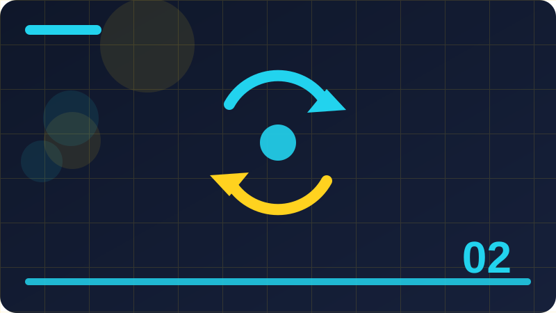

Chapter 2: What Intelligence Means for a Computer

Section 1: Intelligence Is a Word With Many Meanings
When people use the word intelligence, they rarely mean one single thing. A teacher might call a student intelligent because she solves problems quickly. A farmer might call a dog intelligent because it learns commands and finds its way home. A musician might use the word for someone who hears a melody once and plays it back. Each use points to a different ability: speed, learning, memory, perception, or creativity. That variety matters for computers, because a program can be strong in one of these senses and weak in all the others, yet still be described, loosely, as intelligent. Before judging any system, it helps to ask which sense of the word is being used.
Psychologists have argued for decades about whether intelligence is one general capacity or a collection of separate abilities. Some tests measure a general factor, often called g, that predicts performance across many tasks. Others argue for multiple intelligences: verbal, spatial, musical, social, and practical skills that do not always move together. You do not need to settle that debate to study AI, but you should borrow its lesson: do not treat intelligence as a single score. A program that scores highly on a language test has demonstrated language ability, not a general mind, just as a person who is brilliant at mathematics may struggle with music. Specificity is the honest way to describe both people and programs.
For computers, a practical definition works best: intelligence is the ability to achieve goals in a changing environment, using perception, memory, reasoning, and learning. That definition is useful because each part can be examined separately. Does the program perceive its inputs accurately? Does it remember relevant information? Can it reason from premises to conclusions? Does it learn from experience? A system that does all four, even narrowly, deserves the label more than a system that does one brilliantly and fails at the rest. It also gives builders a checklist: when a tool disappoints, which part of the definition failed?
This definition also separates intelligence from consciousness, feelings, and free will. A program can pursue a goal, such as sorting messages or winning a game, without feeling anything about that goal. It can adapt to new inputs without caring about them. That separation can feel strange, because in people, goals and feelings usually go together. In programs, they do not need to. Keeping them separate prevents a common error: assuming that because a program pursues a goal cleverly, it must have desires or intentions like a person's. It has an objective function, a mathematical target, and it optimises that target. That is impressive engineering, not a inner life.
As you read this chapter, keep returning to that practical definition and testing it against examples. When you meet a new system, ask which of the four parts it has, how well it performs each, and what happens when one part is missing. That habit will make you a sharper reader of AI news, a fairer judge of AI tools, and a better builder, because you will design for the specific abilities a job needs rather than chasing a vague notion of smartness.
Check: Using the practical definition in this section, which parts of intelligence does a simple chess program have, and which does it lack?
Section 2: Goals, Actions and Feedback
Every intelligent system, biological or artificial, can be described as an agent: something that perceives its environment, chooses actions, and receives feedback on those actions. A person crossing a road perceives traffic, chooses when to step out, and learns from whether she crosses safely. A thermostat perceives temperature, switches heating on or off, and receives feedback as the room warms or cools. A classifier perceives a message, chooses a label, and, if a user corrects it, receives feedback. The agent picture is powerful because it applies at every scale, from thermostats to chatbots, and it makes the design questions explicit: what does the agent perceive, what actions can it take, and how does it learn from feedback?
Goals define what counts as success for an agent. A thermostat's goal is a target temperature. A classifier's goal is correct labels. A game-playing program's goal is winning. Without a clear goal, an agent cannot be judged, because there is no standard for good action. Builders therefore spend a surprising amount of time defining goals precisely. A vague goal, like "be helpful", is hard to optimise and harder to test. A precise goal, like "label at least ninety percent of test messages correctly, with no group below eighty percent", can be measured, tested, and improved. Precision in goals is a form of honesty: it states what success means before claiming it.
Actions are the choices available to the agent. A classifier's actions are its labels. A summariser's actions are its sentence choices. A robot's actions are its movements. The set of possible actions, called the action space, shapes everything else: a system with only two actions can be simple but limited, while a system with thousands of actions can be flexible but hard to control. Good design often means limiting actions deliberately. A task helper that can only add, list, and complete tasks is safer and easier to test than one that can also delete files, send messages, and change settings. Restraint in actions is a safety feature, not a weakness.
Feedback is how an agent learns whether its actions worked. Feedback can be immediate, like a user correcting a label, or delayed, like discovering weeks later that a summary omitted a key point. It can be explicit, like a rating, or implicit, like a user re-reading a message the tool mislabelled. Designing feedback channels is part of building: if users cannot easily correct a tool, the tool cannot improve, and its mistakes will persist. Later chapters will formalise feedback as rewards and training signals, but the principle starts here: no feedback, no learning, and no learning means a tool that stays as good, or as bad, as the day it was built.
When you design a tool, sketch its agent loop: perceive, decide, act, receive feedback, adjust. That sketch, drawn before any code, reveals gaps early. What if perception is noisy? What if feedback is rare? What if an action cannot be undone? Answering those questions before building saves far more time than fixing them after release, and it is the mark of a thoughtful builder.
Check: Sketch the perceive, decide, act, feedback loop for a spam filter, naming its goal and its actions.
Section 3: Reasoning With Rules
Rule-based reasoning is the oldest and clearest form of machine reasoning. It works like a recipe: if certain conditions hold, then take a certain action. A medical expert system might reason: if the patient has a fever and a rash, consider measles. A loan system might reason: if income is above a threshold and debts are below another, approve. A message classifier reasons: if the text contains a question mark, label it a question. Each rule is readable, testable, and changeable on its own, which makes rule systems easy to debug and explain. When a decision is wrong, you can point to the rule that fired and ask whether it should have.
Rules can be chained. The conclusion of one rule becomes the premise of another, building a chain of reasoning from facts to a final decision. For example, a program might first infer that a message is a question, then infer from its words that it asks about time, then infer that it needs a calendar lookup. Chaining lets simple rules combine into sophisticated behaviour, and the chain itself serves as an explanation: you can show the user each step. That transparency is why rule systems remain common in regulated fields like finance and medicine, where explanations are not optional extras but legal requirements.
Rules also have limits, and honest builders name them. First, someone must write the rules, which requires expertise and time. Second, rules are brittle: they fail on cases the author did not anticipate, and adding rules for exceptions can create conflicts, where two rules suggest different actions. Resolving conflicts needs meta-rules, rules about rules, which add complexity. Third, rules struggle with uncertainty and vagueness. Real language is full of borderline cases where no rule fits cleanly, and a system that must choose one rule will sometimes choose badly. Those limits do not make rules useless; they define where rules fit best: stable, well-understood jobs with clear criteria.
A practical skill is knowing when to stop adding rules. Beginners often respond to every mistake by adding a new rule, until the rule list becomes a tangled web nobody understands. A better response is to ask whether the mistake reveals a general pattern or a one-off oddity. General patterns deserve rules; one-off oddities deserve a fallback, such as asking a human or labelling the case unsure. That discipline keeps rule systems maintainable, and it is the same discipline you will need when managing learned models, where the equivalent trap is adding more data or more complexity for every error.
In this book, you will keep using rules alongside learning, because rules are excellent for safety limits, clear cases, and explanations. A learned model may sort messages, but a rule can guarantee that certain sensitive actions always require human approval. That combination, learning for flexibility and rules for safety, is a pattern you will see again and again in well-designed systems.
Check: Give an example of a job where rule-based reasoning fits well, and one where it would struggle, explaining each choice.
Section 4: Reasoning With Probabilities
Not all reasoning is certain. Often, the evidence points in a direction without proving it. A message containing the word "call" is probably a task, but it could be a note about a phone call that already happened. A cloudy sky probably means rain, but not always. Reasoning with probabilities handles this uncertainty honestly: instead of saying a conclusion is true or false, it says how likely it is, given the evidence. That shift, from certainty to likelihood, is one of the most important ideas in AI, because most real decisions are made under uncertainty.
Probability reasoning starts with prior beliefs: how common is each outcome before seeing evidence? Tasks might be more common than questions in your messages, so a new message starts with a higher prior for task. Then evidence updates those beliefs: seeing a question mark raises the probability of question and lowers the probability of task. The updated beliefs are called posteriors, and the process of updating is, in spirit, Bayes' rule, which you will meet by name in later chapters. For now, the intuition suffices: start with base rates, adjust for evidence, and keep the result as a probability, not a verdict.
Working with probabilities changes how a program behaves. Instead of committing to a single label, it can report that a message is seventy percent likely a task and thirty percent likely a question. That report is more honest, and it enables better decisions: a user might auto-file a ninety-five percent case but review a fifty-five percent case. It also enables better learning, because the program can be judged not only on whether its top guess was right, but on whether its probabilities were well calibrated. A program that says seventy percent and is right seventy percent of the time is well calibrated; one that says ninety-nine percent and is right seventy percent of the time is overconfident, however often its top guess wins.
Probabilities also combine naturally. Multiple weak clues can add up to a strong conclusion, just as your scored classifier added clue counts. In probabilistic terms, each clue shifts the odds a little, and the total shift determines the final probability. That is why scoring classifiers feel intuitive: they are informal probability machines. Later, when you build a learned classifier that counts word frequencies, you will be building a proper probabilistic model, and the intuition you form now will make its mathematics feel familiar rather than foreign.
Finally, probabilities remind you that reasoning is about bets, not proofs. Every prediction is a bet with odds, and good builders state their odds, track whether those odds were right over time, and improve their calibration. That humility, expressed in numbers, is a professional virtue in AI, and it protects users from the most dangerous failure: confident error.
Check: A message is 60 percent likely a task and 40 percent likely a question. Should a tool file it automatically, or ask a human? What would change your answer?
Section 5: Search: Trying Possibilities
Search is a form of reasoning in which a program tries possibilities systematically until it finds one that works. Imagine solving a maze: you try a path, hit a dead end, backtrack, and try another, until you reach the exit. A program solves puzzles, plans routes, and plays games in much the same way, except it can try thousands of possibilities per second and remember which ones it has already tried. Search is powerful because it needs no clever insight: given a way to generate possibilities and a way to test them, it can solve problems that would stump a purely rule-based system.
Different search strategies trade off completeness against speed. Breadth-first search tries all short possibilities before longer ones, guaranteeing the shortest solution but using much memory. Depth-first search follows one path deeply before backtracking, using less memory but possibly wandering down long dead ends. Heuristic search uses a guess about which possibilities look promising, focusing effort where success seems likely, at the cost of sometimes missing the best solution. Choosing a strategy is a design decision, balancing the need for the best answer against the time and memory available. For a route planner, the shortest route may matter; for a game, a good move quickly may matter more than the perfect move slowly.
Search appears in surprising places. A spell checker searches for the closest correct word to a misspelling. A planner searches for a sequence of actions that achieves a goal. A program that arranges a timetable searches for an arrangement that satisfies all constraints. Recognising search in these jobs helps you understand their behaviour: why they sometimes take a long time, why they sometimes return a good-but-not-perfect answer, and why adding constraints can make them faster by pruning possibilities, or slower by making solutions rarer.
Search also has limits. The number of possibilities can explode combinatorially: a game with ten choices per move and ten moves has ten billion paths, far too many to try exhaustively. That explosion, called the search space problem, is why heuristics, learning, and clever pruning matter. A program that learns which moves are promising can search far more effectively than one that tries everything blindly. That partnership, search plus learning, underlies many modern game-playing systems, which combine learned guesses about good moves with systematic search to verify them.
For your own tools, search is most relevant in planning and retrieval: finding the best summary sentences, the most relevant notes, or a sequence of steps to complete a task. You will practise small-scale search in later chapters, and the intuition you build now, that trying possibilities systematically is a form of reasoning, will make those chapters feel natural.
A useful way to practise search thinking is to solve a small puzzle by hand while writing down every possibility you try, including the dead ends. That written record is a search trace, and it shows you exactly what a program's search would do, only slower. When you later watch a program search, you will recognise the same pattern of trying, failing, backtracking, and trying again, and you will understand why some puzzles take a program a long time: the search space is simply large, and no amount of cleverness removes the need to explore it systematically.
Check: Why might a route planner prefer a good route found quickly over the perfect route found slowly?
Section 6: Memory in Machines
A program's memory is its stored information: variables held while it runs, files saved between runs, and databases that persist over time. Short-term memory, like variables, is fast but temporary: it vanishes when the program stops. Long-term memory, like files, is slower but persistent: it survives restarts and can be inspected, backed up, and shared. Designing memory means choosing what to store in each kind, for how long, and for what purpose. A classifier that needs no memory beyond its rules can be simple and private. A task helper that must remember tasks until they are done needs persistent storage, with all the care that implies.
Memory enables learning, but it is not the same as learning. A program can store a thousand examples without learning anything from them, just as a person can own a thousand books without reading them. Learning happens when stored examples are processed into patterns, rules, or parameters that generalise to new cases. Conversely, a program can learn patterns and then discard the original examples, keeping only the learned parameters. That distinction matters for privacy: a model that has discarded its training data may still reveal patterns from that data, but it no longer holds the original records. Understanding what a system stores, versus what it has learned, is essential for judging its privacy.
Memory also creates risks. Stored data can be leaked, stolen, or misused, and the longer it is kept, the greater the risk. Good practice is to store as little as needed, for as short as needed, and to protect what is stored. For your own projects, that means plain-text files in a folder you control, with clear names and regular clean-up. For shared tools, it means encryption, access controls, and deletion policies, topics you will meet in the privacy chapter. Memory design is therefore not only technical; it is an ethical choice about what traces a tool leaves behind.
Another aspect of memory is retrieval: finding the right stored item at the right time. A task helper that stores a thousand tasks but cannot find the urgent ones quickly is barely better than one that stores none. Retrieval needs organisation: sorting, indexing, and searching, which you will practise when you build the local search tool. The quality of retrieval often matters more than the quantity stored, because a small, well-organised memory beats a large, chaotic one. That principle applies to human notebooks as well as program databases, and it is worth remembering when you design your own systems.
Finally, memory shapes identity, for people and, in a limited sense, for programs. A chatbot that remembers your preferences feels more personal, because continuity creates a sense of relationship. That feeling can be pleasant, but it can also be manipulative if the memory was not consented to or cannot be inspected and deleted. Always give users control over what a tool remembers about them, including the ability to view and erase it. Control over memory is control over the relationship with the tool.
Check: Why is storing examples not the same as learning from them, and what privacy difference does that make?
Section 7: Learning as Changing Behaviour
Learning, for a program, means changing its behaviour based on experience. That definition is broader than it sounds. A program that updates its word counts after seeing new labelled messages is learning. A program that adjusts its rules because a user corrected it is learning. A program that stores a user's preferences and uses them next time is learning in a weak sense. What unites these cases is change driven by experience, rather than by a programmer editing the code. If behaviour does not change with experience, the program has not learned, however much data it has stored.
Learning can be supervised, unsupervised, or reinforced, and those three kinds will structure much of this book. Supervised learning uses labelled examples: messages already marked as tasks or questions, from which the program learns the mapping from input to label. Unsupervised learning uses unlabelled examples: a pile of messages with no labels, from which the program finds groupings or patterns on its own. Reinforcement learning uses feedback on actions: a program tries an action, receives a reward or penalty, and adjusts to seek more reward. Each kind fits different jobs, and recognising which kind a job needs is a key design skill.
Learning also has a timescale. Some learning happens once, during training, before the program is used. Some happens continuously, as the program encounters new data in use. Continuous learning can keep a tool up to date, but it also risks drift: the tool may slowly change in ways nobody intended, learning bad patterns from noisy feedback. Builders therefore monitor continuously learning systems, test them regularly, and keep the ability to roll back to an earlier version. Learning is not a one-time event; it is a process that needs supervision, just as a student's learning needs a teacher's guidance.
A final point: learning does not imply understanding. A program that learns to label messages correctly has learned a pattern, not the meaning of the messages. It can still fail on cases outside its experience, and it cannot explain its knowledge the way a person can explain hers. That gap does not make learning useless; it makes it specific. Judge a learned system by its behaviour on fresh data, not by the word learning, which can suggest more than it delivers. Behaviour, tested honestly, is the only fair measure.
Learning also differs in who provides the feedback. In supervised learning, a teacher provides labels, which is expensive but precise. In unsupervised learning, the program must find structure without a teacher, which is cheaper but harder to judge. In reinforcement learning, the environment provides rewards, which can be sparse and delayed, making credit assignment, deciding which action deserved the reward, a central difficulty. Each feedback source shapes what can be learned and how reliably, so choosing a learning kind is really choosing a feedback kind, and that choice should be made deliberately for each job, not by habit or fashion.
Check: Give one example each of supervised, unsupervised, and reinforcement learning, using everyday jobs.
Section 8: Perception Revisited: From Signals to Symbols
Perception turns raw signals into symbols a program can reason about. A microphone produces a wave; a speech recogniser turns that wave into words. A camera produces pixels; an image classifier turns those pixels into labels like "cat" or "dog". A keyboard produces keystrokes; a program turns them into text. In each case, the hard part is the transformation: raw signals are continuous, noisy, and high-dimensional, while symbols are discrete, clean, and manageable. Perception is the bridge between the messy world and the tidy world of symbols, and its quality determines everything downstream. If perception mishears a word, no amount of clever reasoning can recover the original meaning.
Perception systems are usually learned from examples, because the mapping from signals to symbols is too complex to write as rules. A speech recogniser learns from thousands of hours of recorded speech paired with transcripts. An image classifier learns from millions of labelled images. That data hunger is a practical constraint: building a good perception system requires far more data than building a good text classifier on clean input. It also means perception systems inherit the biases of their training data: a speech recogniser trained mostly on one accent will mishear others, and an image classifier trained mostly on one kind of scene will fail on others.
Errors in perception propagate. A misheard word becomes a misunderstood instruction; a mislabelled image becomes a wrong decision. Good systems therefore design for perception errors: they show uncertainty, ask for confirmation on important inputs, and allow correction. A voice assistant that asks "Did you mean...?" when it is unsure is not being annoying; it is practising good perception design. A system that acts confidently on a shaky perception is practising bad design, however impressive its other parts are.
For your own work, perception will mostly mean text: turning typed characters into words, words into features, and features into labels. That is perception in miniature, and the same lessons apply: clean your inputs where sensible, expect noise, show uncertainty, and allow correction. When you later encounter audio or image tools, you will recognise the same pattern at a larger scale, and you will know which questions to ask about their training data and their error rates.
Perception is also where AI meets the physical world most directly, and therefore where its limits are most visible. A program cannot perceive what its sensors cannot capture, and it cannot understand what its symbols do not represent. Keeping that humility in mind prevents overclaiming: a system that labels images is not seeing the world; it is matching pixel patterns to labels learned from examples.
A practical exercise is to trace a single input through a perception system, step by step, noting what information is kept and what is discarded at each stage. That trace reveals the system's assumptions: which variations it treats as noise and which it treats as signal. If it discards variation that matters for your users, such as accent differences in speech, you have found a fairness problem before it harms anyone, and you can address it by broadening the training data or by adding a confirmation step for uncertain perceptions.
Check: Why does a perception error early in a system cause more damage than a reasoning error later?
Section 9: Language Understanding Versus Language Production
Language AI involves two distinct jobs that are often confused: understanding and production. Understanding means turning language into a useful representation: what is the user asking, what is the topic, what action is wanted? Production means turning a representation into language: writing a reply, a summary, or a story that a person can read. A classifier understands in a narrow sense: it turns a message into a label. A chatbot produces: it turns an internal state into fluent text. A full conversational system does both, but each part can be judged separately, and each fails differently.
Understanding failures look like misclassification: the system thinks you asked about billing when you asked about delivery, or it misses that your message was a joke. Production failures look like fluent nonsense: a reply that reads beautifully but answers the wrong question, invents a fact, or contradicts itself. A system can be good at one and poor at the other. A summariser that understands a document well may still produce a summary that omits a crucial qualification. A chatbot that produces beautiful sentences may understand almost nothing about what you actually need. Judging a system on its fluent output alone therefore tells you about production, not understanding.
That distinction matters for building. If your tool's job is understanding, such as sorting or searching, invest in testing its labels and its handling of ambiguous input. If its job is production, such as summarising, invest in checking its output for accuracy, completeness, and faithfulness to the source. If it does both, test both, separately. Many real failures come from testing only the impressive part, production, while neglecting the quiet part, understanding, which determines whether the impressive output is even relevant.
It also matters for using AI tools critically. When a chatbot gives a fluent answer, ask whether it understood your question or merely produced a plausible-sounding response to its words. Try rephrasing the question, asking a follow-up that requires remembering an earlier detail, or checking a specific fact in its answer. Those probes reveal understanding, or its absence, far better than admiring fluency. A tool that passes such probes deserves more trust; one that fails them should be used with verification, however beautiful its prose.
In this book, you will build both kinds of tools: classifiers and search tools that understand, and summarisers that produce. Keeping the two jobs distinct will help you test each honestly and design each appropriately, rather than blurring them into a vague notion of language skill.
Another way to probe understanding is to ask the system to act on its supposed understanding, not just to talk about it. A system that claims to understand a recipe should be able to list its ingredients in order, or to say what happens if one step is skipped. A system that can only produce fluent text about the recipe, without being able to use it, has demonstrated production, not understanding. Action-based probes like these are harder to fake than fluent paragraphs, and they are a useful test for any tool that claims to understand its input.
Check: A chatbot writes a beautiful paragraph that answers the wrong question. Is that an understanding failure, a production failure, or both? Explain.
Section 10: Common Sense, Again, Deeper
Chapter 1 introduced common sense as background knowledge people take for granted. This section goes deeper, because common sense is not one thing but several. Physical common sense covers how objects behave: solid things do not pass through each other, water flows downhill, and a glass dropped on stone usually breaks. Social common sense covers how people behave: promises create expectations, apologies follow offences, and questions usually expect answers. Temporal common sense covers time: yesterday is past, meetings need participants to be free, and effects follow causes. Programs lack all three kinds, though they can be given narrow slices of each as rules or data.
Why is common sense so hard to give to programs? Because it is rarely written down. People do not state in text that water is wet or that a person cannot be in two places at once, because everyone already knows it. Training data made of text therefore underrepresents common sense, a problem sometimes called reporting bias: text reports the unusual, not the obvious. A program learning only from text will know a great deal about rare events and little about everyday facts. That imbalance explains many absurd AI errors: the program knows the rare fact but misses the obvious one, because the obvious one was never written down for it to learn.
Researchers have tried to fix this by building knowledge bases of everyday facts, by training on images and video as well as text, and by giving programs simulated environments where physical rules apply. Each approach helps in narrow cases, but none has produced general common sense. The difficulty is not only listing facts, but knowing when they apply, how they interact, and when exceptions override them. A glass usually breaks when dropped, but not if it lands on a soft mat. Knowing the exception requires judgement about the situation, not just a list. That judgement, built from lived experience, remains hard to formalise.
For builders, the practical response is the same as in Chapter 1, but stronger: design for the absence of common sense. Add checks for physical and temporal plausibility in narrow jobs. Keep humans in the loop where common sense matters. Test on everyday cases, not only on specialised benchmarks. And never assume that a system that handles a complex specialised task will handle a simple everyday one. Complexity and common sense are different skills, and a system can have the first without the second.
As a user, the same lesson applies: when an AI tool gives an answer that violates common sense, that is not a rare glitch; it is a predictable consequence of how these systems learn. Check the answer, correct it if you can, and do not assume the system will catch its own absurdity next time.
Check: Why does training on text alone give a program poor physical common sense, even with huge amounts of text?
Section 11: Planning: Thinking Ahead
Planning is the ability to choose a sequence of actions that leads to a goal, rather than just reacting to the present moment. A person planning a journey thinks about steps in order: leave home, catch a bus, change trains, arrive. A program planning a task does the same: it searches for a sequence of actions, checks that each step's conditions are met, and verifies that the final step achieves the goal. Planning differs from simple reaction because it considers the future: an action that looks good now may block a better action later, and a plan must avoid such traps. That forward-looking quality is what makes planning feel intelligent, even when the individual actions are simple.
Planning requires a model of the world: a representation of the current state, the actions available, and how each action changes the state. If the model is wrong, the plan will fail, however clever the search. A task helper that plans your day needs to know how long tasks take, which tasks depend on others, and when you are free. If its estimates are wrong, its plan will be unrealistic. Building a good model is therefore often harder than searching for a plan, and it is where domain knowledge matters most. A planner for cooking needs a different model from a planner for travel, even though the search algorithm may be the same.
Plans also need flexibility. The world changes: a bus is late, a task takes longer than expected, a new urgent item arrives. A rigid plan that cannot adapt will break at the first surprise. Good planners therefore replan when conditions change, or they build plans with slack: extra time, alternative steps, and checkpoints where the plan can be reviewed. That flexibility is a form of robustness, and it is why real planning systems, from navigation apps to project tools, constantly update their plans rather than following an initial plan blindly. Designing for replanning is part of designing for the real world.
For your own tools, planning appears in small forms. A task helper that orders tasks by deadline and dependency is planning. A summariser that picks sentences in a sensible order is planning its output. A search tool that tries one strategy, then another if the first fails, is planning its retrieval. Recognising these as planning helps you improve them: ask whether the order is sensible, whether dependencies are respected, and whether the tool adapts when its first attempt fails. Small planning improvements often yield large usability gains.
Finally, planning reveals the limits of pure reaction. A purely reactive system, which always responds to the immediate input without considering the future, can be fast and simple, but it will make short-sighted choices. A planning system is slower but wiser, because it looks ahead. Choosing between reaction and planning, or combining them, is a design decision that depends on how much the future matters for the job. For most personal tools, a little planning goes a long way.
Check: Why does a good plan need slack and replanning, rather than just a perfect initial sequence?
Section 12: Creativity: New Combinations
Creativity is often treated as a mysterious human gift, but for computers it can be described more plainly: producing something new and valuable by combining familiar elements in unfamiliar ways. A program that generates a melody by combining notes in a pattern it has not seen before is being creative in that narrow sense. A program that writes a story by recombining plot elements from its training data is doing the same. The newness is real, but it is combinatorial: new arrangements of old pieces, rather than creation from nothing. People also create combinatorially, of course, but they add intention, experience, and judgement about what is valuable, which programs lack.
That distinction helps you judge creative AI fairly. When a program produces an impressive image or story, ask what pieces it combined and whether the result is valuable to someone, for some purpose. A recombination that surprises and delights is valuable, even if the program did not intend it. A recombination that is merely novel but useless, or that copies an existing work too closely, is less valuable, however technically impressive. Value is judged by people, in context, not by the program itself. That is why human curation remains central to creative AI: people select, edit, and refine what programs generate, turning raw output into finished work.
Creative programs also raise questions about originality and ownership. If a program was trained on many artists' work, and its output resembles one of them closely, who owns the result? If a writer uses a program to draft a story, how much of the story is hers? Those questions have no settled answers, and they vary by law and by context. As a builder and user, the safe course is transparency: disclose AI assistance where it matters, avoid presenting generated work as entirely your own when it is not, and respect the creators whose work trained the system. Transparency does not resolve the legal debate, but it preserves trust while the debate continues.
For your own projects, creativity appears in modest forms: generating varied examples for testing, suggesting alternative phrasings for a summary, or combining notes in new ways to reveal connections. Those uses are valuable precisely because they are modest: they assist human creativity rather than replacing it. A tool that suggests three ways to phrase a sentence helps a writer; a tool that writes the whole essay for her bypasses her learning. Designing creative tools as assistants, offering options rather than finished products, keeps the human in the creative loop where she belongs.
Finally, remember that creativity needs constraints. A program told to "be creative" with no constraints will produce randomness, not value. A program given a theme, a form, a length, and an audience will produce something more useful, because constraints guide combination. The same holds for people: a blank page is harder than a brief. Good creative tools therefore ask for constraints and offer variations within them, rather than promising unbounded originality.
Check: Why is human selection and editing still important when a program generates creative work?
Section 13: Social Intelligence and Its Limits
Social intelligence is the ability to understand and navigate relationships: reading emotions, following social norms, cooperating, and communicating appropriately. People use it constantly: they adjust their tone for different audiences, notice when someone is upset, and cooperate on shared goals. Programs can imitate parts of social intelligence: a chatbot can adopt a friendly tone, a recommendation system can suggest content others liked, and a game program can cooperate with teammates. But imitation is not the same as social understanding, because programs do not experience relationships, emotions, or social norms; they match patterns associated with them.
That gap creates both opportunities and risks. A friendly tone can make a tool more pleasant to use, which is a genuine benefit. But a tool that simulates empathy can also mislead users into trusting it more than they should, sharing more than they intended, or treating it as a confidant. Designers must therefore be careful with social cues: a chatbot that says "I understand how you feel" is making a claim it cannot back, because it feels nothing. More honest phrasing, such as "That sounds difficult", acknowledges the user's words without claiming an inner experience the program does not have. Small wording choices like these are ethical choices, not mere style.
Social intelligence also involves norms that vary by culture, context, and relationship. What is polite in one setting may be rude in another; what is appropriate from a colleague may not be from a stranger. Programs trained on data from one culture may misjudge norms in another, leading to tone-deaf or offensive output. Testing social behaviour across cultures and contexts is therefore essential, and it is hard, because norms are rarely written down explicitly. They are learned through participation, which programs do not do. That is another reason to keep humans in charge of socially sensitive interactions, rather than delegating them fully to programs.
For builders, the lesson is restraint. Use social cues sparingly, for usability, not for manipulation. Make it clear that the user is interacting with a program, not a person, especially in sensitive contexts like health, finance, or emotional support. Provide easy ways to reach a real person when the interaction matters. And never design a system to exploit social instincts, for example by simulating affection to keep users engaged. Those practices cross from assistance into manipulation, and they damage trust in the long run, however effective they seem in the short run.
Social AI is a growing field, and it will produce tools that feel increasingly human. Your defence, as a user and builder, is the distinction this chapter keeps returning to: behaviour versus experience. A program can behave socially without being social, just as it can behave intelligently without understanding. Holding that distinction protects you from both over-trust and unnecessary fear.
Check: Why is a chatbot saying "I understand how you feel" misleading, and what would be a more honest alternative?
Section 14: Consciousness: A Careful Note
Consciousness is the hardest topic in this book, and the honest thing to say at the start is that nobody fully understands it. Philosophers and scientists debate what consciousness is, how it arises, and how to tell whether something has it. Some argue it requires a biological brain; others argue it could arise in any sufficiently complex information-processing system. Some argue it is an illusion; others argue it is fundamental. There is no settled test, and no consensus. That uncertainty matters, because it means claims about machine consciousness, in either direction, should be treated with caution, not certainty.
What can be said is that current AI systems show no evidence of consciousness in the sense people mean by the word: subjective experience, awareness of being alive, feelings, or a point of view. They process inputs and produce outputs according to patterns and rules. They do not report experiences they have, because they have no experiences to report; when they produce sentences about feeling, they are producing language patterns about feeling, learned from human text. That is not evidence of inner life, any more than a parrot repeating "I am hungry" is evidence that the parrot understands hunger in the human sense. Behaviour alone does not settle the question, but the absence of any independent evidence, beyond fluent text, is telling.
Why does this matter for builders? Because treating a program as conscious, or as a person, changes decisions about responsibility, rights, and care. If a program were conscious, harming it or deleting it might raise moral questions. If it is not, those questions do not arise, but questions about its effects on conscious people do. The practical course is to treat programs as tools, however sophisticated, and to focus moral attention on the people they affect: users, creators whose work trained them, and communities whose data shaped them. That focus keeps ethics grounded in real harms and benefits, rather than speculation.
It also matters for users. A program that talks about itself as if it were a person can invite emotional attachment, especially from lonely or vulnerable users. Designers should avoid encouraging such attachment, by making the program's nature clear and by not simulating personal feelings or relationships. Users, in turn, should remember that a fluent conversation partner is not necessarily a conscious companion, and that seeking human connection from people, not programs, remains important for wellbeing.
This section does not settle consciousness, and no section in this book will. Its purpose is to give you a careful stance: open to evidence, sceptical of fluent claims, and focused on the real effects of AI on real people. That stance will serve you well as systems become more fluent and the question becomes more pressing.
Check: Why is fluent talk about feelings not, by itself, evidence that a program is conscious?
Section 15: Measuring Intelligence Fairly
Measuring intelligence, for people or programs, is fraught with fairness problems, because any test measures some abilities and not others, in a particular format, under particular conditions. A test written in one language favours speakers of that language. A test that rewards speed favours fast responders over careful thinkers. A test based on one culture's knowledge favours members of that culture. Those biases do not make tests useless, but they mean test scores must be interpreted with their context: who was tested, in what format, and what abilities the test actually sampled. A score without context is a number in search of meaning.
For AI, the same problems appear in benchmarks. A benchmark built from internet text favours systems trained on similar text. A benchmark that tests only English favours English-trained systems. A benchmark with a time limit favours fast systems over thorough ones. None of those biases is necessarily intentional, but all of them affect results. Responsible evaluation therefore reports benchmark details alongside scores: the data source, the language, the format, and the known limitations. A reader who knows those details can judge whether the benchmark matches her own needs; a reader given only a score cannot.
Fair measurement also requires testing across groups. A system that performs well on average but poorly for one group is not fairly intelligent for that group, however high its average. Breaking down results by group, by language, by dialect, and by difficulty is therefore not an optional extra; it is part of honest measurement. Later chapters will teach you how to do such breakdowns for your own tools, starting with simple groupings like message type and style. The habit starts here: never accept an average without asking whose average it is.
Another fairness issue is access to the test itself. If a system was trained on the test data, its score is inflated, a problem called contamination. If a system's builders knew the test questions in advance, they could tune for them specifically, which is a form of teaching to the test. Both problems are common in AI evaluation, because training data is vast and test data often leaks into it. Asking whether a test was truly fresh for the system being evaluated is therefore essential, and it is the same question you learned to ask about your own classifier's test set, now applied at a larger scale.
Finally, remember that measurement shapes behaviour. Systems optimised for a benchmark will improve on that benchmark, sometimes at the cost of other abilities. That is not cheating; it is optimisation. But it means benchmark scores can improve while real-world usefulness stays flat or declines. The remedy is to measure what you actually care about, in conditions that resemble real use, rather than optimising for a proxy. For your tools, that means testing on your own real messages and notes, not only on textbook examples.
Check: Why is an average accuracy score insufficient for judging whether a system is fair?
Section 16: Intelligence in Animals: A Comparison
Comparing machine intelligence with animal intelligence is instructive, because animals show that intelligence does not require language. A crow can solve puzzles, use tools, and remember faces for years. A dog can learn commands, read human gestures, and navigate complex social situations. An octopus can open jars, camouflage itself, and solve mazes. None of these animals writes essays or does algebra, yet each demonstrates problem-solving, learning, and adaptation in its own environment. Intelligence, in nature, is diverse and embodied: it is shaped by the body, the senses, and the environment, not by a single abstract capacity.
That diversity challenges a language-centred view of intelligence. If intelligence were only about language, animals would seem unintelligent, which they clearly are not. Their abilities remind us that perception, memory, motor control, and social navigation are forms of intelligence too, and that a system can be intelligent in those forms without language. For AI, the lesson is that language skill, however impressive, is only one form. A robot that navigates a cluttered room, a program that controls a prosthetic hand, or a system that predicts weather patterns may demonstrate intelligence in non-linguistic forms that deserve recognition, even if they cannot chat.
Animals also show the importance of embodiment: intelligence shaped by having a body in a world. A crow's tool use depends on its beak and claws; a dog's social skill depends on its senses of smell and hearing, far keener than a person's. Programs, lacking bodies, lack the grounding that embodiment provides: they do not touch, move, or experience consequences in the world. That lack helps explain their common-sense gaps, discussed earlier. A program that has never dropped a glass cannot know, from text alone, quite what dropping means. Embodied AI, such as robotics, tries to close that gap, but it is still early, and its systems remain narrow.
Another lesson from animals is that intelligence is often specialised. A crow is not a general problem-solver; it is excellent at the problems crows face. A dog is not a general thinker; it is excellent at social and scent problems dogs face. Specialisation is not a flaw; it is how evolution works, fitting abilities to environments. Machine intelligence is similarly specialised, and recognising that helps you avoid the mistake of expecting a system excellent at one job to excel at unrelated jobs. A chess program is not a general thinker; it is a crow, excellent at its own puzzle.
Finally, animals remind us that intelligence does not imply consciousness in the human sense, nor moral status in any simple way. We treat animals with care for many reasons, but we do not assume they reason like people. The same caution applies to programs: recognise their abilities, respect their limits, and judge them by their behaviour in their own domain, not by human standards alone.
Check: How does crow tool use challenge the idea that intelligence is mainly about language?
Section 17: Intelligence in Groups
Intelligence is not only individual; it can also be collective. A team of people can solve problems none of them could solve alone, by combining knowledge, checking each other's work, and dividing labour. A colony of ants can find food, build nests, and defend itself, through simple individual rules that produce complex group behaviour. A scientific community can accumulate knowledge over generations, far beyond any single scientist's capacity. In each case, the intelligence lies not in one mind, but in the interactions between many agents, and in the structures, like language, writing, and institutions, that preserve and share knowledge.
AI systems can participate in collective intelligence, but they can also disrupt it. A search tool that finds relevant knowledge quickly enhances a team's intelligence. A summariser that distils a long discussion helps a group reach a decision. But a recommendation system that shows each person only what they already agree with can fragment a group's shared understanding, creating echo chambers where collective intelligence declines. A chatbot that generates plausible but false information at scale can pollute a community's knowledge base faster than humans can correct it. Designing AI for collective intelligence therefore means asking not only whether a tool helps an individual, but whether it helps the group think better together.
Collective intelligence also depends on diversity. A group with varied perspectives, knowledge, and skills solves problems better than a homogeneous group, because different members notice different things and challenge each other's assumptions. AI tools that amplify only the majority view, or that are trained only on majority data, reduce that diversity, making groups dumber even as individuals feel smarter. Builders should therefore test tools for their effects on diversity: do they surface varied perspectives, or do they narrow them? Do they help minority voices be heard, or do they drown them out? Those are collective questions, and they deserve attention alongside individual accuracy.
For your own tools, collective intelligence appears in small forms. A shared note system that lets a study group search each other's notes enhances collective memory. A task helper that shows who is doing what enhances coordination. A classifier that sorts group messages helps everyone find what matters. Designing for the group, not just the individual user, means thinking about shared data, permissions, and fairness across members, topics you will meet in later chapters. The best personal tools often become group tools, and planning for that transition early saves redesign later.
Finally, remember that you, as a learner, are part of a collective intelligence: this book, your notebook, your test sets, and the community of learners and builders around you. Sharing what you learn, asking questions, and correcting each other's mistakes is collective intelligence in action, and it is how the field itself advances.
Check: How could a recommendation system reduce a group's collective intelligence even while helping individuals?
Section 18: What Computers Do Better Than People
It is useful to list, plainly, what computers do better than people, because that list defines where AI tools genuinely help. Computers calculate faster and more accurately, especially with large numbers. They store and retrieve vast amounts of data without forgetting. They apply the same rule consistently, without fatigue or mood. They search large spaces systematically, trying possibilities a person would miss. They monitor continuously, without needing sleep. And they copy information perfectly, without the errors that creep into human copying. Those strengths are not glamorous, but they are real, and they explain why computers are indispensable for many jobs, from bookkeeping to weather forecasting.
Each strength has a corresponding use in AI. Fast calculation enables learning from large datasets. Perfect memory enables retrieval over huge collections. Consistency enables fair application of rules, at least when the rules themselves are fair. Systematic search enables planning and puzzle-solving. Continuous monitoring enables safety systems that watch for anomalies around the clock. Perfect copying enables sharing knowledge widely at low cost. When you design a tool, ask which of these strengths it uses, and whether the job actually needs them. A tool that uses none of them is probably not using the computer well; a tool that uses several is likely to be genuinely useful.
Computers also do something people struggle with: they can hold many possibilities in mind at once, without committing prematurely. A search program can keep thousands of partial plans alive, while a person can only juggle a few. A probabilistic model can track likelihoods for many hypotheses simultaneously, while a person tends to fix on one. That breadth is valuable for complex problems with many interacting factors, where premature commitment leads to error. It is one reason why AI excels at games, scheduling, and optimisation: those jobs reward breadth and systematic comparison over intuition.
However, these strengths do not add up to general superiority. A computer that calculates perfectly may still misunderstand the problem it is calculating about. A computer with perfect memory may still store the wrong things. A computer that searches systematically may still search the wrong space, because its model of the world is wrong. Strengths in execution do not compensate for weaknesses in understanding, judgement, or common sense. The best systems therefore pair computer strengths with human strengths, as this book has argued throughout: machines handle scale and consistency, people handle meaning and responsibility.
Keep this list in mind when you evaluate AI claims. If a tool's benefit comes from one of these strengths, applied to a well-defined job, it is likely real. If its claimed benefit requires understanding, empathy, or judgement that computers lack, be sceptical, and ask how humans remain involved.
Computers also excel at consistency across time: a program today will give the same answer to the same input as it gave yesterday, assuming it has not been updated. People, by contrast, may answer differently depending on mood, fatigue, or recent experience. That temporal consistency makes programs valuable for record-keeping and auditing, where stable behaviour matters more than inspired variation, and it is why logs from programs are trusted as evidence in ways that human recollection often is not.
Check: Pick two computer strengths from this section and give a concrete AI job where each is the main benefit.
Section 19: What People Do Better Than Computers
The companion list, what people do better, is equally important, because it defines where humans must remain in charge. People understand meaning in context, including irony, humour, and indirectness, far better than programs. People have common sense about the physical and social world, built from lived experience. People make moral judgements, weighing values that cannot be reduced to numbers. People empathise, building trust and cooperation through shared feeling. People create genuinely new ideas, not just recombinations, by drawing on experience, intention, and imagination. And people take responsibility, answering for decisions in a way programs cannot. Those strengths are the reason AI should assist people, not replace them, in jobs that matter.
Each strength maps to a failure mode when computers work alone. Without contextual understanding, a program misreads sarcasm or politeness. Without common sense, it suggests absurd actions. Without moral judgement, it optimises a metric at the cost of fairness or safety. Without empathy, it handles sensitive situations coldly. Without genuine creativity, it produces plausible imitations that lack original insight. Without responsibility, its mistakes have no one to answer for them, which is a governance failure, not just a technical one. Recognising these failure modes helps you decide where human involvement is non-negotiable, rather than optional.
People also learn differently from programs. A person can learn from a single striking example, generalise from a story, or learn by being told a principle once. Programs typically need many examples and struggle to learn from one. People can also learn across domains, transferring a skill from cooking to chemistry, or from music to mathematics, in ways programs rarely manage. That transfer, grounded in a rich, embodied understanding of the world, is a profound human strength, and it is why a person with general education can adapt to new jobs far more flexibly than a specialised program can.
Another human strength is noticing when something is off, even without being able to say exactly why. A person reading a summary may feel that something important is missing, or that a tone is wrong, without a formal test. That intuition, built from experience, is a valuable check on AI output, and it is why human review catches errors that automated tests miss. Designing review workflows that harness that intuition, by presenting outputs clearly and giving reviewers time and authority to correct them, is a key builder skill.
Finally, people care. They care about outcomes, about others, and about doing a job well for its own sake. That caring motivates diligence, honesty, and responsibility in ways no objective function can replicate. A program optimises a number; a person pursues a purpose. Keeping purpose in human hands is the ultimate reason for human oversight, and it is a theme this book will return to in every discussion of safety and design.
Check: Why is a person's ability to learn from a single example an advantage over a program that needs thousands?
Section 20: A Simple Agent in Python
Theory becomes clearer when you build it, so this section introduces a tiny agent in Python: a program that perceives, decides, and acts in a loop, with a simple goal. Our agent will manage a small garden in text form. It perceives soil moisture as a number, decides whether to water, and acts by watering or waiting. It receives feedback as the moisture changes. The agent is absurdly simple, but it embodies the agent loop from Section 2: perceive, decide, act, repeat. Understanding this loop in code prepares you for more complex agents later, where perception may be text, decisions may be classifications, and actions may be tool calls.
The program below uses a loop and a simple rule: if moisture is below a threshold, water; otherwise, wait. Watering raises moisture, waiting lowers it as the soil dries. Run it and watch the moisture rise and fall, and the agent's decisions follow. Notice that the agent has no understanding of gardens; it follows a rule based on a number. Yet it achieves its goal, keeping moisture in a reasonable range, which is a form of narrow intelligence: goal-directed behaviour in a changing environment, using perception and action. That is the practical definition from Section 1, in code.
moisture = 30
for day in range(10):
if moisture < 40:
action = "water"
moisture += 25
else:
action = "wait"
moisture -= 10
print(f"Day {day + 1}: {action}, moisture now {moisture}")Try changing the threshold, the watering amount, or the drying rate, and observe how the agent's behaviour changes. A low threshold means the agent waits longer and the soil gets drier; a high watering amount means moisture swings wildly. Those sensitivities are real design issues: an agent's parameters shape its behaviour, and tuning them requires testing, just as tuning a classifier requires testing. There is no universally correct threshold; there is a threshold that works well for a particular garden, climate, and goal, found by experiment.
Now add feedback: suppose watering on a rainy day is wasteful. Add a variable for rain, and a rule that skips watering when it rains. That small addition makes the agent more sensible, because it uses an extra perception to improve its decisions. Real agents grow this way: new perceptions, new rules, new feedback, each added and tested separately. Resist the temptation to add everything at once. Add one perception, test it, and keep it only if it improves the outcome on your test scenarios. That incremental discipline is how simple agents become reliable tools.
Finally, notice what the agent cannot do: it cannot explain why it watered, except by showing its rule and its perception. Add a print statement that shows the moisture value behind each decision, and the agent becomes explainable. Explainability, built in from the start, is far easier than added later, and it is a habit this book will encourage in every agent you build.
Check: Change the threshold in the garden agent to 50 and predict, before running, how its behaviour will change.
Section 21: Goals That Conflict
Real agents often face conflicting goals. A task helper wants to be helpful, by completing tasks quickly, and safe, by never deleting important data. Those goals can conflict when a quick action is risky. A summariser wants to be brief and complete, but brevity and completeness pull in opposite directions. A recommendation system wants to be engaging and informative, but engaging content is not always informative. Recognising conflicts is the first step to handling them, because a system that pretends its goals never conflict will optimise one silently at the expense of the other, and users will discover the trade-off only when something goes wrong.
Handling conflicts requires priorities. A designer must decide, explicitly, which goal wins when they clash. For a task helper, safety should beat speed: it is better to ask before deleting than to delete quickly and wrongly. For a medical summariser, completeness should beat brevity when a detail could affect care. For a news tool, accuracy should beat engagement. Those priorities are value judgements, not technical facts, and they should be stated plainly, so users and reviewers can challenge them. A system whose priorities are hidden cannot be held accountable for them.
Priorities can also be expressed as constraints: hard limits that must never be violated, whatever else the system optimises. A hard constraint might be: never send a message without approval, never reveal a password, never delete without a backup. Constraints are powerful because they are simple to test: either the system violated one, or it did not. Soft goals, like helpfulness or brevity, can then be optimised within those constraints. That structure, constraints first, optimisation second, is a common pattern in safe design, and you will use it in the capstone, where certain actions always require approval.
Conflicts also arise between stakeholders. A user wants personalisation; a community wants privacy. An advertiser wants attention; a reader wants calm. A company wants efficiency; workers want dignity. No technical fix resolves such conflicts automatically; they require negotiation, policy, and sometimes regulation. As a builder, your job is to surface conflicts honestly, rather than hiding them behind a single optimisation metric. If your tool serves one stakeholder at another's expense, say so, and give affected people a voice in the trade-off, or at least a clear way to opt out.
Finally, expect goals to change over time. A tool built for one purpose may be repurposed for another, with different priorities. A classifier built for personal notes, used later for workplace messages, faces new stakes and new conflicts. Reviewing goals and priorities regularly, not only at launch, is part of responsible maintenance. A tool whose goals are reviewed stays aligned with its users; one whose goals are frozen drifts out of alignment as the world changes around it.
Check: A summariser must choose between brevity and completeness for a medical note. Which should win, and why?
Section 22: Uncertainty in Everyday Decisions
Uncertainty is not a special case in AI; it is the normal condition. Sensors are noisy, language is ambiguous, data is incomplete, and the future is unknown. A program that pretends otherwise, by always giving a single confident answer, is misrepresenting its situation. A program that represents uncertainty, by giving probabilities, ranges, or explicit statements of doubt, is being honest, and its users can then decide how much to rely on it. That honesty is not a weakness; it is a feature that distinguishes a trustworthy tool from a flashy one, and it is a skill you should practise in every program you build.
Everyday decisions show how people handle uncertainty naturally. When you are unsure whether it will rain, you carry an umbrella if the cost of getting wet is high, and you leave it if the cost is low. You do not need certainty; you need a probability and a cost. Programs should reason the same way: combine the probability of each outcome with the cost of being wrong, and choose the action with the best expected result, or ask a human when the stakes are high and the uncertainty is large. That cost-sensitive reasoning is more sophisticated than simply choosing the most likely label, and it is the right model for high-stakes tools.
Uncertainty also comes in kinds. Aleatoric uncertainty is randomness in the world itself: even with perfect knowledge, a coin toss is uncertain. Epistemic uncertainty is ignorance: the program does not know because it has not seen enough data, and more data could reduce it. Distinguishing them matters, because they call for different responses. Randomness calls for caution and hedging; ignorance calls for more data, more testing, or asking a human. A program that treats all uncertainty as randomness will never seek more information, while one that treats all uncertainty as ignorance will waste effort chasing data that cannot help. Naming the kind guides the response.
For your small programs, uncertainty handling can be simple. Report a score alongside a label. Use a threshold: above it, act automatically; below it, ask. Give a range instead of a point estimate where appropriate. Those simple practices, applied consistently, already put your tools ahead of many commercial ones, which hide uncertainty behind confident interfaces. They also make your tools easier to test, because you can check not only whether the top guess was right, but whether the reported uncertainty matched reality over many cases.
Finally, remember that users interpret uncertainty differently. Some want numbers, some want words like "likely" or "unsure", and some want a simple recommendation with a warning. Present uncertainty in a form your users understand, and test that presentation with real users, not just with yourself. A well-calibrated number that nobody understands is less useful than a plain statement of doubt that everyone grasps.
Check: What is the difference between uncertainty from randomness and uncertainty from ignorance, and what should a program do about each?
Section 23: Explaining Decisions
An explanation is an account of why a system decided as it did, in terms a person can understand and check. For a rule-based classifier, an explanation is easy: the rule that fired, and the evidence that triggered it. For a scored classifier, it is the scores: which clues pointed which way, and by how much. For a learned model, it is harder, because the decision may depend on thousands of parameters, but even there, approximations help: which inputs mattered most, which similar examples influenced the decision, or what small change would flip the outcome. Explanations need not be perfect to be useful; they need to be accurate enough to check and act on.
Explanations serve several purposes. They help users trust a system when it is right, by showing its reasoning. They help users catch it when it is wrong, by revealing a faulty clue or assumption. They help builders debug, by pointing to the part of the system that caused a mistake. And they help auditors and regulators verify that a system complies with rules, such as not using a forbidden feature. A system without explanations can still be accurate, but it cannot be checked, debugged, or governed as easily, which makes it riskier to deploy, especially for important decisions.
Good explanations are tailored to their audience. A user sorting messages needs a short explanation: "Labelled task because it contains 'buy' and 'tomorrow'." A builder debugging needs more detail: scores, thresholds, and the full feature list. A regulator needs a different kind: what data was used, what features were allowed, and how the system was tested. One explanation does not fit all, and designing explanations is therefore a user-interface task as much as a technical one. Ask who will read the explanation, what decision they need to make from it, and how much detail they can usefully absorb.
Explanations can also mislead, if they are simplified too far or cherry-picked to sound convincing. A system that shows only the evidence supporting its decision, hiding evidence against it, gives a biased explanation. A system that generates a plausible-sounding rationale after the fact, without any connection to its actual computation, gives a false explanation. Honest explanations must reflect the actual decision process, including uncertainty and conflicting evidence, even when that makes the explanation messier. Messy honesty beats tidy fiction, because users who discover a false explanation lose trust in the whole system.
As you build, make explanation a default output, not an afterthought. When your program labels a message, let it also report its main clues. When it ranks search results, let it show why each result matched. That habit will make your tools more trustworthy and your debugging far easier, and it will prepare you for later chapters where explanation becomes a formal requirement for certain kinds of systems.
Check: Why is an explanation that hides evidence against a decision worse than no explanation at all?
Section 24: Learning From Mistakes
Humans and programs both learn from mistakes, but they do so differently, and the difference is instructive. A person who makes a mistake often reflects on it: what did I assume, what did I miss, what will I do differently? That reflection generalises the lesson beyond the single case. A program that makes a mistake, without a learning mechanism, will make the same mistake again, unchanged. A program with a learning mechanism will adjust its parameters or rules in response to the mistake, but only in the narrow way its mechanism allows. It will not reflect, in the human sense, unless reflection was explicitly designed into it as a review process by its builders.
That is why mistake handling must be designed, not assumed. A good system collects mistakes: user corrections, test failures, and reported errors, stored with their inputs and expected outputs. It reviews them regularly, looking for patterns, as Chapter 1 taught you to do. It updates its rules, data, or parameters to address the dominant patterns, and it retests on both old and new cases to ensure the fix did not break other things. That loop, collect, review, update, retest, is the organisational version of learning, and it is what makes a deployed system improve over time rather than stagnate or drift.
Mistakes also have a social dimension. Users who report mistakes are doing the builder a favour, and they should be thanked, not blamed, and told what happened as a result. A system that makes reporting easy, acknowledges reports, and visibly improves in response will receive more reports, creating a virtuous cycle. A system that makes reporting hard, ignores reports, or punishes users for errors will receive fewer, and its builders will lose their best source of information about real-world performance. Designing feedback channels is therefore not just a technical task; it is a relationship task.
Finally, learn to distinguish mistakes that teach from mistakes that merely happen. A mistake caused by a missing word in a list teaches you to broaden the list. A mistake caused by genuine ambiguity teaches you to improve your fallback or to ask the user. A mistake caused by a one-off typo teaches you little, except that typos happen. Focusing on the mistakes that teach, the patterned ones, gives the best return on effort, while chasing one-off mistakes wastes time and can distort the system. That prioritisation, like all prioritisation in AI, is a judgement call that improves with practice.
Mistakes also differ in who notices them. Some mistakes are obvious to users, who will report them quickly, while others are silent, affecting outcomes without anyone realising, such as a search tool that quietly omits relevant results. Silent mistakes are more dangerous, because they do not generate feedback, and builders must therefore hunt for them actively, by auditing outputs, comparing against independent sources, and testing on cases where omission would matter most.
Check: Why should a builder thank users who report mistakes, rather than treating reports as complaints?
Section 25: The Frame Problem in Plain Words
The frame problem is a classic difficulty in AI, and its plain-words version is this: when an action happens, how does a program know what changes and what stays the same? If you move a book from a shelf to a table, the book's location changes, but the colour of the walls, the weather outside, and the contents of the book do not. A person knows this effortlessly, because she understands the world as a stable place where most things stay put unless acted on. A program, which only knows what it was told, must be told, explicitly or implicitly, what does not change, or it may waste effort reconsidering everything, or wrongly assume that unrelated things changed too.
The frame problem matters for planning and reasoning. A planner that must re-derive the entire world state after every action will be slow and error-prone. A planner that assumes nothing changes except what its action directly affects will be faster, but may miss side effects: moving a book may also move dust, or block light, or reveal something behind it. Real-world actions have side effects that are hard to list completely, which is why planning in the real world is harder than planning in a tidy simulation. The gap between simulation and reality, where unmodelled side effects live, is a major source of AI failures when systems move from the lab to the world.
Modern systems handle the frame problem pragmatically rather than solving it in general. They use models that specify, for each action, its main effects, and they assume other things stay the same unless there is evidence otherwise. They monitor the world after acting, to catch unexpected changes, and they replan when monitoring reveals a surprise. That combination, assume stability, monitor for change, replan on surprise, is robust enough for many jobs, even though it does not solve the philosophical problem. It is another example of a practical engineering response to a deep theoretical difficulty, and it is the kind of response this book favours.
For your own tools, the frame problem appears in small forms. When your task helper marks a task complete, what else should change? Should its deadline disappear, should related tasks update, should a log entry be added? Deciding those side effects explicitly, rather than leaving them to chance, is frame-problem thinking at a small scale. It forces you to state your assumptions about what stays the same, which makes your program's behaviour predictable and testable. Predictability, in turn, is what users trust.
The frame problem also reminds you why common sense is hard: knowing what stays the same requires background knowledge about how the world works. A program without that background must be given it, piece by piece, for each job. That is slow work, but it is honest work, and it is why narrow, well-modelled tools often outperform ambitious, poorly modelled ones.
Check: After marking a task complete in a task helper, what should change and what should stay the same? List two of each.
Section 26: Symbols and Their Limits
Symbolic AI represents knowledge as symbols and rules: words, categories, and logical statements that a program manipulates. "All birds can fly" is a symbolic statement; "Tweety is a bird" is a symbol; concluding "Tweety can fly" is symbolic reasoning. That approach is powerful for clear, structured knowledge: mathematics, logic puzzles, and formal procedures. It is also transparent, because symbols and rules can be read and checked. For decades, symbolic AI was the dominant approach, and it produced expert systems, theorem provers, and planners that remain impressive for their clarity.
Symbols have limits, however, and those limits explain why learning-based approaches grew. First, the world is messy, and translating it into clean symbols loses information: the richness of an image, the tone of a voice, or the ambiguity of a sentence does not fit neatly into symbols. Second, symbolic knowledge is brittle: a rule like "all birds can fly" fails for penguins and ostriches, and fixing it requires exceptions, then exceptions to exceptions, until the system becomes unwieldy. Third, acquiring symbols is labour-intensive: someone must write down the knowledge, and that knowledge is often tacit, known by experts but hard to articulate. Those limits do not make symbols useless; they define where symbols fit: structured, stable, well-understood domains.
Modern AI often combines symbols with learning. A learned model may perceive raw signals and produce symbols, such as labels, which a symbolic system then reasons about. Or a symbolic system may provide constraints and explanations for a learned model, making its behaviour safer and more interpretable. That hybrid, sometimes called neuro-symbolic AI, tries to get the best of both: the flexibility of learning for perception, and the clarity of symbols for reasoning. You will practise a simple hybrid in this book: a learned or scored classifier produces a label, and rules use that label to decide actions, with human approval for sensitive ones.
For your own work, symbols appear whenever you use categories, labels, or keywords. Your classifier's labels, question, task, and note, are symbols. Its keyword lists are symbolic knowledge. Recognising them as such helps you see their strengths, readability and testability, and their limits, brittleness and loss of nuance. It also helps you decide when to move beyond symbols, to learned representations that capture more nuance, and when to stay with symbols because clarity matters more than nuance.
The history of AI can be read as a pendulum between symbols and learning, and the wisest position is often in the middle: use symbols where knowledge is clear, learning where patterns are subtle, and combine them where a job needs both. That middle position is the one this book teaches.
A classic example of symbolic brittleness is a medical rule that works for typical patients but fails for patients with rare conditions, because the rule's author never encountered those conditions when writing it. The fix is not always more rules; sometimes it is a different approach, such as learning from a diverse dataset that includes rare cases, or a hybrid in which symbols handle the typical cases and a learned model flags the unusual ones for human review.
Check: Why does the rule "all birds can fly" fail, and what does that failure show about symbolic knowledge?
Section 27: Connectionism in Plain Words
Connectionism is the idea that intelligence can emerge from many simple units connected together, each doing a tiny computation, rather than from explicit symbols and rules. The brain is the inspiration: neurons, each simple on its own, produce perception, memory, and thought through their connections. Artificial neural networks borrow that inspiration: layers of simple units, connected by weights, transform inputs into outputs through many small steps. No single unit understands the task; understanding, if the word applies at all, emerges from the pattern of connections as a whole. That emergence is both the power and the mystery of connectionist systems.
Neural networks learn by adjusting their weights from examples, using the guess, compare, adjust loop from Chapter 1, scaled up enormously. A network for image classification might have millions of weights, adjusted over millions of examples, until its outputs match the labels well. The result can be remarkably accurate on perception tasks that defeat symbolic approaches, because the network learns subtle patterns in raw signals that no person could write as rules. That is why neural networks dominate image, speech, and language tasks today: they handle messy, high-dimensional data better than symbols alone.
Their weakness is opacity. A network's knowledge is distributed across its weights, not written as readable rules, so explaining a decision is hard. A network may also fail in ways that look strange to a person, because its patterns differ from human patterns: a few changed pixels can flip an image label, while a person sees no difference. Those failures remind you that the network's patterns are statistical, not conceptual. It has learned what predicts labels in its training data, not what objects mean in the world. That distinction is crucial for judging neural systems fairly.
Connectionism and symbolism are often presented as rivals, but they are better seen as complements. Perception, where data is messy and patterns are subtle, favours connectionist learning. Reasoning, where knowledge is structured and explanations matter, favours symbols. Many modern systems combine them, using networks for perception and symbols for reasoning, planning, and safety checks. That combination is not a compromise; it is a recognition that different parts of intelligence need different tools, a theme that runs through this entire chapter.
You do not need to build a neural network in this book to understand it. You need the mental model: many simple units, weights learned from examples, patterns emerging from connections, and opacity as the price of flexibility. With that model, you can read about neural systems critically, asking what data they learned from, how they were tested, and how their decisions can be checked, rather than treating them as magic.
Training a neural network also requires careful choices that beginners often overlook: how much data to use, how long to train, and when to stop. Training too long can lead to memorisation, while training too briefly leads to underfitting, where the network has not yet learned the main patterns. Those trade-offs are the learned-model versions of the generalisation problems you met in Chapter 1, and they show that neural networks, for all their power, face the same fundamental discipline: test on fresh data, prefer patterns that generalise, and resist the temptation to optimise only for training performance.
Check: Why is a neural network's decision harder to explain than a rule-based system's decision?
Section 28: Intelligence Without a Brain
It is tempting to think intelligence requires a brain, because in nature it does. But the agent picture from this chapter suggests a broader view: any system that perceives, reasons, learns, and acts towards goals shows a form of intelligence, whether it has a brain or not. A thermostat, a chess program, and a classifier each show a narrow form, without anything like a brain. That broad view is useful because it lets you recognise intelligence in unexpected places: in a colony of ants, in a market, in a scientific community, and in a well-designed organisation. Intelligence, on this view, is a property of systems and their interactions, not only of individual minds.
That broad view also has a caution. Calling a thermostat intelligent stretches the word so far that it risks losing meaning. If everything that pursues a goal is intelligent, then a river pursuing the sea, or a ball rolling downhill, might count too, which seems wrong. The difference is in the flexibility and learning: a thermostat adjusts to temperature, but it does not learn new goals, reason about novel situations, or adapt its strategy from experience in the way even a simple learning program does. Drawing the line is a matter of judgement, not a sharp boundary, and different people draw it in different places. What matters is that you draw it explicitly, and say why, rather than using the word intelligence as if its meaning were obvious.
For builders, the broad view encourages systems thinking. Instead of asking only whether a single program is intelligent, ask whether the whole system, program plus users plus feedback loops, behaves intelligently. A classifier alone may be narrow, but a classifier plus users who correct it, plus builders who review corrections and update it, forms a learning system that improves over time. That system-level intelligence is often more valuable than any single component's cleverness, and it is what you are really building when you design feedback loops and maintenance routines. Good tools are not just smart programs; they are smart systems.
The broad view also reminds you that intelligence can be distributed. A team using a shared search tool, a shared notebook, and a shared task list is collectively smarter than any member alone, because the tools extend memory, retrieval, and coordination. Designing tools that enhance collective intelligence, by sharing knowledge fairly and surfacing diverse perspectives, is a higher ambition than building a clever standalone program, and it is one this book will encourage in its later, project-focused chapters.
Finally, the broad view keeps you humble about individual programs. A single program, however impressive, is only part of a larger system that includes data, users, and context. Judging it in isolation, without that system, gives a misleading picture of its intelligence and its impact. Always ask: intelligent for whom, in what system, towards what goal? Those questions keep the word honest.
Check: Why might a classifier plus its correcting users be more intelligent, as a system, than the classifier alone?
Section 29: Testing Intelligence in Practice
Testing intelligence in practice means testing behaviour on tasks that matter, under conditions that resemble real use. For your classifier, that means fresh messages, varied styles, and attention to mistakes by type. For a summariser, it means documents like the ones users actually summarise, judged on accuracy and completeness, not just fluency. For a search tool, it means questions users actually ask, judged on whether the right notes appear near the top. The principle is the same in every case: test the job, not a proxy for the job, and test it in realistic conditions, not only in the lab.
Practical testing also means testing over time. A system that performs well today may degrade as language, data, or user needs change. A classifier trained on last year's messages may slowly lose accuracy as new products, slang, or topics appear. Regular retesting, on fresh samples from current use, catches that drift before it becomes serious. It also creates a record of performance over time, which is valuable for users, builders, and auditors alike. A system without ongoing testing is a system whose quality is unknown, however good it was at launch.
Testing should also include adversarial thinking: trying inputs designed to break the system, not just typical inputs. What happens with empty input, with extremely long input, with input in another language, with input that tries to trick the system? Adversarial testing, done on your own systems with your own data, is a legitimate and important part of building safely. It is different from attacking other people's live systems, which this book never teaches. Testing your own tool's robustness is responsible; probing someone else's system without permission is not. Keep that boundary clear in all your work.
Another practical aspect is involving users in testing. Users notice failures that builders miss, because they use the tool in ways builders did not anticipate, with language builders did not expect. Beta testing, feedback channels, and simple surveys are therefore not just marketing; they are evaluation methods. A tool tested only by its builders has a blind spot the size of its builders' assumptions. A tool tested by diverse users has a better chance of working for diverse users, which is the fairness goal as well as the quality goal.
Finally, practical testing requires honesty about what was not tested. No test covers everything, and claiming otherwise is misleading. A test report should state its scope: which tasks, which data, which conditions, and which known gaps remain. That honesty lets users decide how much to trust the tool for their own, possibly untested, use case, and it guides future testing towards the gaps that matter most.
Practical testing should also include testing with real users' language, not just with clean examples written by builders. Real language includes abbreviations, slang, typos, and mixed languages, and a system that was never tested on such language will surprise its builders in deployment. Collecting a small sample of real, anonymised, consented examples for testing is therefore one of the highest-value testing investments a builder can make, even though it requires care about privacy and permission.
Check: Why is testing a system only on data its builders created insufficient, however thorough that testing seems?
Section 30: What This Chapter Has Taught You
This chapter asked what intelligence means for a computer, and its answer, repeated in many forms, is that intelligence is not one thing but a collection of abilities: perceiving, remembering, reasoning, learning, planning, and acting towards goals, each in narrow, testable forms. A program can have some of those abilities without others, and judging it fairly means naming which ones it has, how well it performs them, and what happens when one is missing. That specific, ability-by-ability view replaces a vague notion of smartness with a practical checklist you can use for any system you meet or build.
You also learned to think in terms of agents: perceiving, deciding, acting, and learning from feedback, with goals that may conflict and uncertainty that must be represented honestly. You learned about rule-based and probabilistic reasoning, about search as a form of reasoning, and about memory as storage distinct from learning. You met symbols and connectionism as complementary approaches, not rivals, and you considered creativity, social intelligence, and consciousness with appropriate caution. Those ideas are not just theory; they are the vocabulary you will use to design, test, and explain every tool in the rest of the book.
Two habits deserve special emphasis as you move on. First, always ask which abilities a job needs, and design for those, rather than chasing general intelligence. A note sorter needs classification, not conversation; a summariser needs selection, not world knowledge. Second, always test behaviour on realistic, fresh data, and report mistakes by type and by group, rather than hiding behind a single average score. Those habits, practised consistently, are what separate careful builders from impressive demo-makers, and they are worth more than any single technique.
The next chapter turns to data, the fuel that powers all the abilities discussed here. Without good data, perception has nothing to perceive, learning has nothing to learn from, and reasoning has no premises to reason about. You will learn what data is, in plain words, how to look at it, how to organise it, and how to respect the people it comes from. That chapter is the foundation for the learning chapters that follow, where data becomes models, and models become tools. Carry this chapter's checklist with you: abilities, goals, uncertainty, explanations, and honest testing. You will need all of them.
Keep this chapter's ideas alive by using them as lenses: each time you meet a new AI product, run through the checklist in your head, asking about abilities, goals, uncertainty, explanations, and testing. That five-minute exercise, done regularly, builds a habit of critical evaluation that will serve you far longer than any single fact in this chapter, because products will change while the questions remain the same and remain revealing.
Check: Name four abilities from this chapter's view of intelligence, and for each, name a tool that demonstrates it narrowly.
Section 31: Embodiment and Grounding
Embodiment is the idea that intelligence is shaped by having a body that interacts with the world. A person learns about weight by lifting, about fragility by breaking, and about space by moving through it. A robot with arms and sensors learns similarly, through physical interaction, though far more narrowly. A disembodied program, which only processes text or numbers, lacks that grounding: its symbols are not tied to physical experience, but only to other symbols. That lack of grounding is a deep reason why language programs can be fluent yet unwise about the physical world: their words float free of the experiences those words describe for people.
Grounding, in AI terms, means connecting symbols to the things they refer to, through perception or action. A program that labels an image "cat" is grounded in a weak sense, because its label is tied to pixel patterns from real cat images. A program that uses the word "cat" only because it appears near other cat-related words in text is grounded even more weakly, because its connection is to language patterns, not to cats. Stronger grounding would involve seeing, hearing, or interacting with cats, or at least with rich, varied data about them. The stronger the grounding, the less likely the program is to make absurd errors about cats, though grounding alone does not guarantee understanding.
For builders, grounding is a practical consideration: what data grounds your system's symbols? A task helper's symbols, like task names and deadlines, are grounded in the user's own files and actions, which is strong grounding for a narrow job. A chatbot's symbols about world events are grounded only in text it was trained on, which is weaker, and that weakness shows in its errors about recent or physical facts. Matching grounding to job is therefore important: jobs that need physical or social grounding should not be given to systems grounded only in text, unless humans check the results.
Embodied AI, such as robotics, is an attempt to provide stronger grounding through physical interaction. Robots that learn by trying actions and observing results can develop a practical sense of weight, balance, and space that text-only systems lack. But robots are expensive, slow to train, and limited to narrow environments, so embodied learning remains a specialised field, not a general solution. For most software tools, grounding will remain indirect, through data, and builders must be honest about its limits.
As a learner, practise asking the grounding question: what experience, data, or perception connects this system's symbols to the world? If the answer is thin, expect errors where the world matters, and design human checks for those cases. Grounding is not an abstract philosophy topic; it is a predictor of where a system will fail, and therefore a design tool.
Check: Why might a robot that learns by physically stacking blocks develop better spatial sense than a text-only program that reads about stacking?
Section 32: Rationality and Its Limits
Rationality, in AI, means choosing actions that best achieve your goals, given what you know. A rational agent does not necessarily know everything; it acts optimally given its beliefs and its uncertainty. That definition is useful because it separates rationality from omniscience: a rational program can be wrong, if its beliefs are wrong, and still be rational, because it acted sensibly on the information it had. Judging a system therefore requires asking two questions: were its beliefs reasonable, and did it act well given those beliefs? A system can fail on either, and the fixes differ: better data for beliefs, better decision-making for actions.
Human rationality is bounded: people have limited time, memory, and computing power, so they use shortcuts, called heuristics, that work well enough most of the time. Programs also have bounded rationality, limited by data, time, and computation, and they too use heuristics, such as searching only promising possibilities rather than all of them. Recognising bounded rationality prevents a common error: expecting a program to be perfectly rational, and then being surprised when it uses a shortcut that fails in an unusual case. Shortcuts are necessary, not a flaw, but they must be chosen wisely and tested on the cases where they are most likely to fail.
Rationality also depends on the goal. A program that optimises the wrong goal perfectly is not rational in any useful sense; it is efficiently mistaken. That is why goal definition, from Section 2, matters so much. A recommendation system optimising only for clicks will promote sensational content, even if its designers wanted it to inform. A classifier optimising only for overall accuracy may ignore a minority group, even if fairness was intended. The metric is the goal, in practice, whatever the designers say they intended. Checking that the metric matches the real goal, and that it does not reward harmful shortcuts, is a core builder responsibility.
Another limit is that rationality assumes goals are fixed and known, while real goals are often vague, changing, or conflicting, as Section 21 discussed. A person may not know what she wants until she sees options; a group may disagree about goals; a goal that seemed right at launch may become wrong as circumstances change. Rational agents therefore need ways to clarify goals, to handle disagreement, and to update goals over time, with human involvement. A system that optimises a frozen goal without ever questioning it will eventually become misaligned with its users, however rational its individual decisions seem.
For your tools, rationality means something modest and practical: given the data and the goal you stated, does the tool act sensibly, explain its actions, and allow correction when its beliefs are wrong? If it does, it is rational enough for its job. If it optimises a narrow metric at the cost of the real goal, it needs redesign, not more optimisation.
Check: A system perfectly optimises clicks but promotes misleading content. Is it rational? Explain using the goal-versus-metric distinction.
Section 33: Intuition Versus Calculation
People often contrast intuition, fast gut feeling, with calculation, slow deliberate reasoning. Psychologists describe them as two systems: fast, automatic, pattern-based thinking, and slow, effortful, rule-based thinking. Programs show a similar contrast. A learned model that instantly labels a message is like intuition: fast, pattern-based, and sometimes wrong in ways that are hard to explain. A rule-based planner that searches possibilities step by step is like calculation: slow, explicit, and checkable. Both have a place, and the best systems, like the best people, combine them: fast pattern matching for routine cases, slow deliberation for hard or important ones.
Intuition, in programs, is powerful for perception and classification, where patterns are strong and speed matters. A spam filter must decide quickly, on many messages, and a learned model's fast pattern matching fits that job. Calculation is powerful for planning and verification, where correctness matters more than speed and the reasoning must be checkable. A task planner that must respect deadlines and dependencies benefits from explicit search, even if it is slower. Choosing between them, or combining them, depends on the job's demands for speed, accuracy, and explainability, not on a general preference for one style.
Both styles fail characteristically. Intuition fails on unusual cases, where patterns mislead, and on biased data, where patterns reflect prejudice. Calculation fails when its model is wrong, when its search space is too large, or when it takes too long to be useful. A system that relies only on intuition will be fast but untrustworthy on hard cases. A system that relies only on calculation will be trustworthy but too slow or too brittle for messy, real-world inputs. Hybrid designs, which use intuition to propose and calculation to verify, or calculation to handle clear cases and intuition to handle fuzzy ones, often outperform either alone.
For your own tools, practise this hybrid thinking. Your scored classifier is intuition-like: fast pattern matching with scores. Adding a verification step, such as asking a human to check low-score cases, adds calculation-like deliberation where it matters most. That combination, fast for the easy majority, careful for the uncertain minority, is a pattern you will use repeatedly, because it balances speed and safety in a way users appreciate. It also mirrors how people work: routine tasks on autopilot, hard tasks with full attention.
Finally, be wary of systems that present intuition as calculation, or vice versa. A fluent language model may present a gut-feeling guess as if it were a reasoned argument, with steps that look deliberate but were generated as patterns. Checking whether the steps actually follow, rather than merely sounding like reasoning, is a critical skill, and it is one you will practise in the evaluation chapters.
A good hybrid design often uses calculation to check intuition, rather than replacing it. For example, a fast classifier might propose a label, and a slower rule-based checker might verify that the label does not violate a safety constraint before acting on it. That division of labour plays to each style's strength: intuition for speed and breadth, calculation for safety and checkability, and together they produce a system that is both responsive and trustworthy.
Check: Give an example of a job where fast pattern matching fits better than slow calculation, and one where the reverse holds.
Section 34: Adaptability: Changing With the World
Adaptability is the ability to keep working well as conditions change. Language changes, users change, data changes, and goals change. A program that was accurate last year may be less accurate this year, not because it broke, but because the world moved on. A classifier trained on old slang will miss new slang. A search tool indexed on old notes will miss new topics. A task helper built for one routine will struggle when the routine changes. Adaptability is therefore not a luxury; it is a requirement for any tool meant to last, and it must be designed in, not hoped for.
Adaptability has several mechanisms. One is retraining: updating a learned model on new data, regularly, with fresh testing. Another is rule updating: adding or changing rules as new cases appear, with regression testing to protect old cases. A third is user feedback: letting users correct mistakes, and using those corrections to improve the system. A fourth is monitoring: tracking performance over time, so decline is noticed early rather than discovered by angry users. The best systems combine several mechanisms, because no single one covers all kinds of change. Retraining handles gradual drift; feedback handles sudden new cases; monitoring catches both.
Adaptability also has risks. A system that adapts too quickly to noisy feedback may become unstable, chasing every correction and losing its overall accuracy. A system that adapts without oversight may learn bad patterns from malicious or mistaken feedback, a problem called data poisoning in security contexts. Builders therefore adapt with safeguards: review feedback before incorporating it, test updates before deploying them, and keep the ability to roll back. Adaptability without safeguards is drift; adaptability with safeguards is improvement. The difference is process, not just technology.
For your small tools, adaptability can be simple: a regular routine, perhaps weekly, in which you review mistakes, add new examples, retest, and note what changed. That routine, done consistently, keeps a tiny tool useful for years, while a neglected tool, however good at launch, slowly becomes obsolete. It also teaches you the maintenance mindset that professional AI work requires: building is only the first half; caring for what you built is the second, and it lasts longer.
Finally, adaptability applies to you as a learner. The field of AI changes quickly, with new tools, techniques, and claims appearing constantly. The skill that lasts is not knowledge of any single tool, but the ability to learn new ones critically: to test claims, to try small versions, and to integrate what works into your existing understanding. That meta-skill, learning how to learn in a changing field, is the most durable outcome of this book.
Monitoring is the often-forgotten part of adaptability. A system that is never measured after deployment may drift silently for months, with users gradually losing trust without ever reporting a specific failure. A simple monthly check, comparing current performance on a fixed test set with the performance at launch, catches drift early, when it is cheap to fix, rather than late, when users have already moved on to a competitor or abandoned the tool entirely.
Check: Why might a system that adapts instantly to every user correction become worse, not better?
Section 35: Autonomy: How Much Freedom?
Autonomy is how much freedom a system has to act without human approval. A fully autonomous system acts entirely on its own: it perceives, decides, and acts, with no human in the loop. A fully manual system acts only when a human tells it to, step by step. Most useful tools lie between: they act autonomously on routine, low-stakes cases, and seek approval on uncertain or high-stakes ones. Choosing the right level of autonomy for each action is one of the most important design decisions you will make, because it balances efficiency against safety, and it determines who is responsible when something goes wrong.
Autonomy should vary by action, not be set once for the whole system. Sorting notes can be highly autonomous, because mistakes are easy to undo. Sending a message on a user's behalf should be less autonomous, because mistakes are public and hard to retract. Deleting data should be least autonomous, because mistakes may be irreversible. That variation, action by action, is more sensible than a single autonomy setting for a tool, and it is how careful designers think: for each action, ask what happens if it is wrong, how easily it can be undone, and whether a human could reasonably check it. The answers set the autonomy level.
Autonomy also interacts with trust. A system that earns trust through accurate, explainable behaviour can be granted more autonomy over time, as users become confident in it. A system that makes unexplained mistakes will lose trust, and users will demand more oversight, or abandon it. That dynamic means autonomy is not just a design choice at launch; it is a relationship that evolves. Builders should design for that evolution: start with lower autonomy, demonstrate reliability, and increase autonomy gradually, with user consent, rather than starting fully autonomous and hoping for trust.
Another consideration is accountability. The more autonomous a system, the harder it is to say who is responsible for its actions: the user who deployed it, the builder who created it, or the organisation that owns it? Clear lines of responsibility matter, especially for high-stakes actions. A common pattern is to keep humans accountable for autonomous actions by requiring them to set the goals, constraints, and approval rules in advance, and to review logs afterwards. That way, autonomy does not mean abdication: humans remain responsible for the framework within which the system acts.
For your tools, start with low autonomy. Let your classifier suggest labels, but let the user confirm them. Let your summariser draft summaries, but let the user edit them. As you gain confidence through testing, you can automate the clearest cases, while keeping humans involved for the rest. That gradual path is safer, more trustworthy, and more educational than jumping straight to full autonomy.
Check: For a task helper, which action should have the highest autonomy and which the lowest? Give reasons based on reversibility.
Section 36: Bias in Intelligence Tests
Bias in intelligence testing, for people or programs, is a long-standing problem, and understanding it helps you build fairer AI. A test is biased when it systematically favours one group over another for reasons unrelated to the ability being measured. A language test written in formal English favours native speakers of that dialect, even if it claims to measure reasoning. A puzzle test based on one culture's objects favours members of that culture. A benchmark built from internet data favours systems trained on similar data. In each case, the test measures familiarity with the test's context, not just the ability it claims to measure, and scores therefore mislead.
Bias enters tests in several ways. Item bias occurs when individual questions favour a group: a question about a sport popular in one country favours people from that country. Format bias occurs when the test format itself favours a group: a timed test favours fast responders, a written test favours strong writers, regardless of the ability being tested. Sampling bias occurs when the test's norm group, the people it was calibrated on, does not represent the people being tested. Each kind requires a different remedy: reviewing items for cultural specificity, offering varied formats, and calibrating on diverse groups. None is fixed by simply adding more test items of the same biased kind.
For AI benchmarks, bias is often hidden in the data. A benchmark drawn from one source, such as news articles or social media, reflects that source's demographics, language, and perspectives. A system trained on similar data will score well, not because it is generally intelligent, but because it matches the benchmark's context. A system trained on different data will score poorly, even if it is better for its own users. That is why benchmark scores should never be read without knowing the benchmark's source and its match to the system's intended use. A mismatch between benchmark and use case is a warning, not a verdict.
Builders can reduce test bias by diversifying test data: including varied languages, dialects, styles, and topics, and by breaking down results by group, as earlier sections urged. They can also involve diverse testers in creating and reviewing test items, because bias is often invisible to those who share the test's assumptions. Those practices do not eliminate bias entirely, but they reduce it, and they make remaining bias visible, which is the first step to addressing it. Visibility is itself a fairness achievement: a biased test whose bias is known can be interpreted cautiously, while a biased test presented as neutral misleads everyone.
Finally, remember that fairness in testing is not only about groups; it is also about individuals. A test that works well on average may still be unfair to a particular person whose abilities it samples poorly. Human judgement, in reviewing test results for individuals, remains an important safeguard, especially for high-stakes decisions like hiring or grading. Tests inform judgement; they should not replace it.
Check: A benchmark is drawn entirely from formal news articles. Why might it unfairly favour some language systems over others?
Section 37: The Chinese Room Argument
The Chinese Room is a famous thought experiment by philosopher John Searle, designed to challenge the idea that manipulating symbols counts as understanding. Imagine a person who speaks no Chinese locked in a room, with a rule book for manipulating Chinese characters. Messages in Chinese are passed in, the person follows the rules to produce replies in Chinese, and the replies are passed out. To an outside observer, the room seems to understand Chinese, because its replies are appropriate. But the person inside understands nothing; she is merely following rules for symbol manipulation. Searle argued that a computer program is like the person in the room: it manipulates symbols according to rules, without understanding their meaning, however convincing its outputs appear from outside.
The argument has been debated for decades, with many replies. Some argue that the whole room, person plus rule book plus room, understands Chinese, even if the person alone does not. Others argue that understanding requires more than symbol manipulation, such as grounding in experience or consciousness, which the room lacks. Others argue that the thought experiment proves nothing, because it assumes what it tries to prove about the nature of understanding. You do not need to settle that debate to benefit from it. Its value is as a reminder: impressive behaviour from outside does not prove understanding inside, and the gap between behaviour and understanding is a real philosophical and practical issue, not a trick.
For builders, the Chinese Room is a caution against overclaiming. When your classifier labels messages correctly, it is tempting to say it understands messages. The Chinese Room suggests a more careful description: it manipulates symbols according to patterns that correlate with meaning, without understanding meaning itself. That careful description does not diminish the tool's usefulness, but it prevents the over-trust that comes from assuming understanding. A tool that is described as symbol manipulation will be checked; a tool described as understanding may not be, and that difference matters for safety.
The argument also highlights the importance of grounding, discussed earlier. The person in the room lacks any connection between Chinese symbols and the world they refer to; she has only rules for shuffling symbols. A program grounded in perception, action, and interaction with the world has more than shuffling, though still not necessarily understanding in the human sense. Grounding narrows the gap, but whether it closes it remains debated. For practical purposes, stronger grounding is better, because it reduces absurd errors, regardless of the philosophical verdict.
Finally, the Chinese Room teaches humility about tests. A test that only observes behaviour from outside, like a conversation test, cannot distinguish a true understander from a clever symbol manipulator. That is why this book emphasises testing behaviour for a specific job, rather than claiming general understanding from test performance. Behavioural tests are useful for judging usefulness; they are not proof of inner understanding, and presenting them as such overclaims.
Check: In your own words, what does the Chinese Room argument claim about the difference between manipulating symbols and understanding them?
Section 38: Intelligence and Wisdom
Intelligence and wisdom are different, and the difference matters for AI. Intelligence, as this chapter has defined it, is the ability to achieve goals effectively, using perception, reasoning, learning, and memory. Wisdom is the ability to judge which goals are worth pursuing, what is right and good, and how to act well in complex, value-laden situations. A person can be intelligent but unwise, pursuing a clever but harmful goal, or wise but not especially quick at puzzles. Wisdom involves values, judgement, perspective, and care for long-term consequences, qualities that go beyond effective goal achievement. Programs, which optimise given goals, can be intelligent in the narrow sense without being wise in any sense, because wisdom requires choosing goals, not just achieving them.
That distinction explains why AI systems can be both impressive and troubling. A recommendation system intelligently optimises engagement, but unwisely promotes divisive content, because engagement was the goal it was given, not wisdom about what content is good for users or society. A classifier intelligently optimises accuracy, but unwisely ignores fairness, because fairness was not in its goal. The fault lies not in the system's intelligence, but in the goals and constraints its designers gave it, and in the absence of wisdom in that design process. Wisdom, in AI, lives in the humans who define goals, set constraints, and review outcomes, not in the programs themselves.
Building wisely therefore means asking questions that go beyond accuracy and efficiency. Is this goal worth pursuing? Who benefits, and who is harmed? What are the long-term effects, not just the immediate metrics? What would a wise person, considering the whole situation, do differently? Those questions have no formulaic answers, which is why they require human deliberation, diverse perspectives, and time for reflection. Rushing to optimise a metric without asking them is intelligent in the narrow sense and unwise in the broader sense, and it is a common failure mode in technology development.
For your own projects, practise wisdom in small ways. Before building a tool, ask whether it is worth building, for whom, and with what risks. During building, ask whether your metrics capture what you truly care about, or whether they reward shortcuts. After building, ask how the tool affects its users over time, not just in a demo. Those questions, asked consistently, are the beginning of wise building, and they distinguish a thoughtful builder from a merely clever one. Cleverness optimises; wisdom chooses what to optimise, and when not to optimise at all.
Finally, remember that wisdom is also about knowing limits. A wise builder knows when a problem is not a technical problem, when a tool should not be built, and when human judgement should not be automated. That restraint, born of perspective rather than capability, is perhaps the most important quality this book can encourage, because it protects users from the harms of clever but unwise automation.
Check: Give an example of an AI system that is intelligent in optimising its metric but unwise in its overall effect.
Section 39: From Definition to Design
This chapter has given you a definition of intelligence and a tour of its parts. Now it is time to turn definition into design: how do you use these ideas when you actually build a tool? Start by listing the abilities the job needs, using this chapter's vocabulary. Does it need perception, memory, reasoning, learning, planning, or language? For each ability, ask how well the tool must perform it, and what happens if it fails. That list becomes a specification, more useful than a vague goal like "make it smart", because it names the parts to build, test, and improve separately.
Next, choose an approach for each ability, drawing on the approaches this chapter compared: rules for clear, stable knowledge; learning for subtle patterns in data; search for planning; symbols for reasoning and explanation; connectionist models for perception. Most tools will mix approaches, and that mixing is a strength, not a confusion, as long as each choice is deliberate and documented. Write down why you chose each approach, so future you, or a collaborator, can understand and challenge the choice. Documentation of design choices is part of the design, not an extra.
Then, design for the human parts: goals, feedback, explanations, and oversight. State the goal precisely, including its priorities when goals conflict. Design feedback channels so users can correct mistakes and builders can learn from them. Design explanations so users can check decisions. Set autonomy levels action by action, based on reversibility and stakes. Those human-centred designs are what make a tool trustworthy, and they should be sketched before code, not bolted on after, because they shape the architecture: what is stored, what is shown, and what requires approval.
Finally, plan for testing and maintenance from the start. Define your test set, your metrics, and your breakdowns by type and group, before you build. Plan a routine for reviewing mistakes, updating data or rules, and retesting. Plan for drift, as the world changes, and for rollback, when an update makes things worse. A tool with a maintenance plan is a tool that can last; a tool without one is a demo that will decay. That planning, done early, costs little and saves much, and it is the practical payoff of this chapter's theory.
You now have a design method, not just a definition. Use it for every tool in this book, starting with the practical task below, and you will find that building becomes more systematic, testing becomes more honest, and your tools become more trustworthy, because they were designed, not just assembled.
Documentation is part of design, not an afterthought, because a tool that cannot be explained cannot be maintained. When a new builder joins a project, or when you return to your own code after months away, clear notes about why each approach was chosen, what was tested, and what limits were accepted save hours of reverse engineering. Write those notes as you build, while the reasons are fresh, rather than reconstructing them later from memory, which is unreliable and incomplete.
Check: For a note summariser, list three abilities it needs and one approach for each, with a reason.
Section 40: Intelligence in Everyday Language
People use the word intelligent loosely in everyday language, and that looseness causes confusion about AI. A phone is called smart, a fridge is called intelligent, and a thermostat is called clever, even though none of them understands anything. Those uses are marketing shorthand for "has some automated features", not claims about minds. But shorthand, repeated often, shapes expectations: users begin to expect understanding, judgement, and care from devices that only have automation. When those devices fail to understand, users feel betrayed, even though the device never promised understanding in any precise sense. Language shapes trust, and loose language creates misplaced trust.
As a builder and user, you can counter that looseness by using precise language. Instead of saying a tool is intelligent, say what it does: it sorts messages by keyword patterns, it summarises by selecting sentences, it predicts traffic from past data. Those precise descriptions set accurate expectations, which leads to wiser use: users will check important results, because they know the tool guesses, rather than trusting blindly, because they think it understands. Precision is not pedantry; it is a safety practice, and it costs nothing except a few extra words.
Everyday language also anthropomorphises programs: it says a program thinks, wants, learns, or lies, as if it were a person. Those verbs are convenient, but they smuggle in assumptions about inner life that programs do not have. A program does not want; it optimises an objective. It does not lie; it outputs text that happens to be false. It does not think; it computes. Using careful verbs, optimises, outputs, computes, classifies, predicts, keeps the distinction clear, and helps listeners reason correctly about causes and fixes. When a program outputs a falsehood, the fix is in its data or patterns, not in its morals, and careful language points to the right fix.
That does not mean you must never use loose language. In casual conversation, saying "my phone is smart" is harmless, as long as everyone understands it as shorthand. The danger is when shorthand migrates into design decisions, product claims, or policy, where precision matters. In those contexts, insist on specifics: what abilities, tested how, with what limits, for what job? Those questions, asked persistently, are the antidote to hype, and they are a skill this book has been training since Chapter 1.
Finally, notice how your own language has changed as you read this book. You now have words like classifier, feature, test set, calibration, and autonomy, which let you describe AI tools more precisely than before. That vocabulary is itself a learning outcome, because it lets you think more clearly and communicate more honestly about AI. Keep expanding it, and keep using it, especially when others use vague language to sell or to frighten. Precision is a form of care, for users and for the truth.
Check: Rewrite the sentence "The AI understands your notes and knows what you need" in precise, non-anthropomorphic language.
Section 41: Measuring Your Own Agent
Now that you have a design vocabulary, practise measuring a simple agent: the garden agent from Section 20, or a new agent you invent. Measuring means defining success before running, collecting data during running, and judging afterwards against that definition. For the garden agent, success might be: moisture stays between 30 and 70 on at least nine out of ten days, and watering happens on no more than five days. Those criteria are specific, measurable, and tied to the goal, which is a healthy garden without waste. Vague success, like "the garden does well", cannot be measured, and therefore cannot guide improvement.
Run the agent, record its daily moisture and actions, and compare the record with your criteria. Where did it succeed, and where did it fail? Did it water too often, or let the soil get too dry? Did a parameter change improve one criterion at the cost of another? That trade-off analysis is the heart of measurement: improvements rarely help everything at once, and choosing between trade-offs requires priorities, as Section 21 discussed. A threshold that reduces watering may increase dry days; a threshold that prevents dry days may waste water. There is no perfect threshold, only a threshold that best balances your priorities for your garden.
Also test the agent under varied conditions, not just one scenario. Try a hot spell, where drying is faster, and a rainy spell, where watering is unnecessary. A robust agent handles varied conditions gracefully, while a fragile one works only in the conditions it was tuned for. Varied testing reveals fragility before users do, and it is the same principle as testing a classifier on varied messages. One scenario is a demo; several scenarios are a test. Aim for several, even for tiny agents, because the habit scales to larger systems where varied testing is essential.
Record your measurements in your notebook, with the parameters, the conditions, and the outcomes. That record lets you compare versions fairly: did the new threshold actually improve results, or did it merely look better on one lucky run? Without a record, memory will favour the version you prefer, not the version that performed best. With a record, decisions become evidence-based, which is the professional standard this book advocates, at every scale from garden agents to commercial tools.
Finally, share your measurements with someone else and ask whether your success criteria seem right. A criterion that only you understand, or that ignores an important outcome like water waste, will mislead even if it is measured precisely. External review of criteria is a fairness and validity check, catching blind spots before they become design flaws. Measurement is not just counting; it is deciding what counts, and that decision deserves scrutiny.
Check: For the garden agent, define a success criterion that balances plant health against water waste, and explain how you would test it.
Section 42: When to Use AI and When Not To
Not every job needs AI, and recognising when it does not is a mark of good judgement. A job with clear, stable rules and little data is better served by plain rules or even by a manual process, than by a learned model that adds complexity without benefit. A job where mistakes are costly and explanations are required may be better served by a transparent rule system than by an opaque model, even if the model is slightly more accurate. A job where data is scarce, biased, or private may be better served by not building an AI tool at all, until better data or a safer design is available. Saying no to AI, for a particular job, is not a failure; it is a design decision, and often the wisest one.
A useful decision framework asks four questions. First, is the job well defined, with a clear goal and measurable success? If not, clarify the job before choosing a technology. Second, is there suitable data, in sufficient quantity and quality, with appropriate permissions? If not, gather data or choose a simpler approach. Third, are the costs of mistakes acceptable, and can they be mitigated with human oversight, explanations, and fallbacks? If not, do not automate, or automate only the safest parts. Fourth, does AI add value beyond a simpler solution, such as rules, search, or a well-designed form? If a simple solution works as well, prefer it, because simplicity brings reliability, explainability, and maintainability. AI should earn its complexity by delivering clear additional value.
That framework also helps you resist hype. When a new AI technique is fashionable, it is tempting to apply it everywhere, whether it fits or not. The framework forces a pause: does this job actually need this technique, or does it need a simpler tool done well? Many failed AI projects could have been saved by that pause, because they applied a complex model to a job that needed clear rules, or to data that could not support learning. Simplicity is not a lack of ambition; it is a form of discipline, and it often produces better tools.
For your own projects, apply the framework to each idea before building. A note sorter may pass all four questions and deserve a classifier. A tool that judges people's character from their messages would fail on mistakes, data, and value, and should not be built. A tool that automates a high-stakes decision without human oversight would fail on oversight, and should be redesigned as an assistant, not an automator. Those judgements, made early, save wasted effort and prevent harm, and they are part of what makes a builder responsible rather than merely enthusiastic.
Finally, remember that "not AI" is not "not valuable". A well-organised plain-text system, a clear checklist, or a simple search tool can be enormously useful, and this book's capstone includes such tools alongside AI components. The goal is useful, trustworthy tools, not AI for its own sake. Keep that goal in focus, and let it guide your technology choices.
Check: Apply the four-question framework to a proposed tool that automatically grades students' essays. What would you conclude?
Section 43: The Future of Machine Intelligence
Predicting the future of AI is difficult, and past predictions have often been wrong, in both directions. Some predicted human-like intelligence within decades, and were disappointed. Others dismissed neural networks as a dead end, and were surprised by their success. The lesson is humility: progress depends on data, hardware, research ideas, investment, and social choices, all of which are hard to forecast. Instead of a single prediction, it is wiser to consider scenarios: continued steady improvement in narrow tools, breakthroughs in particular areas like perception or planning, plateaus where progress slows, and setbacks where limitations or harms cause retrenchment. Each scenario calls for different preparation, and a builder prepared for several is more resilient than one betting on one.
One trend that seems likely to continue is the improvement of narrow tools: better transcription, translation, summarisation, and search, integrated into everyday software. Those improvements will make personal and workplace tools more capable, but they will not, by themselves, produce general intelligence. They will also raise expectations, which makes honest communication about limits even more important. As tools improve, users may assume they understand more than they do, and builders must work harder to keep expectations accurate, through explanations, uncertainty reporting, and human oversight.
Another trend is the growth of embodied and interactive systems: robots, assistants that use tools, and agents that take multi-step actions. Those systems will face the challenges this chapter discussed, grounding, planning, common sense, and safety, in sharper forms, because their actions affect the world directly. Designing them safely will require the constraint-and-approval patterns from later chapters, applied rigorously. The builders who understand those patterns will be in demand, because safety will become a competitive advantage, not just a compliance burden, as autonomous systems spread.
A third trend is increased scrutiny: regulation, auditing, and public debate about fairness, privacy, and accountability. That scrutiny is healthy, because it pushes builders towards transparency and testing, and it creates roles for people who can evaluate AI honestly. Learning to evaluate, explain, and govern AI, the skills this book teaches, will therefore remain valuable even as specific techniques change. Techniques come and go; judgement, testing, and responsibility endure.
Whatever the future holds, your best preparation is the one this book offers: a clear understanding of what AI is, practical skill in building small, honest tools, and habits of testing, explanation, and care for users. Those foundations adapt to new techniques, because they are about thinking well, not about memorising today's tools. Stay curious, stay sceptical, and keep building.
Scenario planning is a practical skill for builders: for each scenario, ask what you would do differently, what skills you would need, and what safeguards would matter most. That exercise does not predict the future, but it prepares you for several futures, which is more valuable than a confident prediction that turns out to be wrong. It also reveals which investments are robust across scenarios, such as testing, explanation, and safety skills, and those are the investments worth making first.
Check: Why is preparing for several future scenarios wiser than betting on a single prediction about AI?
Section 44: Learning From Other Builders
You do not have to learn AI alone, and you should not. Other builders, past and present, have made mistakes, found solutions, and written about both, and learning from their experience saves you from repeating their errors. Read documentation, tutorials, and case studies critically: what job was the author solving, what data did they use, what did they test, and what limits did they admit? Those questions, applied to others' work, are the same ones you apply to your own, and they turn reading from passive consumption into active learning. A tutorial that shows only successes teaches less than a case study that admits failures and explains fixes.
Open-source projects are a rich source of learning, if approached wisely. Choose small, well-documented projects related to your interests, read their code with a question in mind, and try running them on your own data. Notice how they organise code, handle errors, test, and document decisions. Those organisational lessons are often more valuable than any single algorithm, because they show how real tools are structured to last. Avoid the trap of copying large projects wholesale without understanding them; instead, borrow ideas, adapt them to your scale, and credit the source.
Communities, online and in person, are another resource. Asking a precise question, describing what you tried and what happened, will usually earn helpful answers, because it shows you have done the work and respect others' time. Answering others' questions, even as a beginner, also teaches: explaining an idea you just learned consolidates it, and seeing others' mistakes reveals patterns in your own thinking. Participate generously, cite sources, and be kind in disagreement, because the community you build now will support your learning for years.
Finally, learn from users, who are often the best teachers about a tool's real strengths and weaknesses. Users use tools in ways builders never anticipated, with data builders never imagined, and their feedback, if listened to, reveals the gap between design intention and real use. Treat user feedback as data, not as criticism, and close the loop by telling users what changed as a result. That practice builds both better tools and stronger relationships, and it is a hallmark of builders who last.
As you progress through this book, keep a list of builders, projects, and communities you learn from, and revisit it when you start new projects. Learning is cumulative, and so is a network of good sources. Invest in both.
When you answer others' questions, you also learn to spot gaps in your own understanding, because explaining forces you to organise what you know and to notice where your organisation is shaky. A question you cannot answer clearly is a gift: it points to the next thing to learn, and following that pointer, rather than avoiding the question, is how expertise grows steadily over time.
Check: When reading a tutorial, what four questions should you ask to learn actively rather than passively?
Section 45: Your Growing Vocabulary
Vocabulary is a tool for thinking: the more precise words you have for AI concepts, the more precisely you can think and communicate about them. This chapter has added many words to your vocabulary: agent, goal, action space, feedback, prior, posterior, calibration, heuristic, grounding, embodiment, autonomy, and more. Each word names a distinction that matters: between storing and learning, between intuition and calculation, between intelligence and wisdom. Learning those distinctions is not jargon for its own sake; it is learning to see differences that were invisible before, and therefore to make better design decisions.
Use your vocabulary actively. When you describe a tool, use the specific words: say it is a classifier with a scored model and a human-in-the-loop fallback, rather than saying it is smart. When you debug, name the failure: a calibration problem, a grounding gap, a conflicting goal, rather than saying it does not work. When you evaluate, name the metric and its breakdown, rather than saying it is accurate. Specific language leads to specific thinking, which leads to specific fixes, and that chain, from words to thoughts to actions, is why vocabulary matters for builders, not just for exams.
Also learn to translate vocabulary for different audiences. A user does not need to hear about posteriors and calibration; she needs to hear that the tool is unsure and why, in plain words. A collaborator needs the technical terms, because they convey precise meaning efficiently. A regulator needs both: plain explanations of what the tool does, and technical details of how it was tested. Adapting your language to your audience, without losing precision, is a communication skill that grows with practice, and it is essential for builders who must explain their work to non-technical stakeholders.
Keep a glossary in your notebook, with each term defined in your own words and illustrated by an example from your own projects. Revisit it as you learn new terms in later chapters, and revise definitions that turn out to be incomplete. A glossary that grows with your understanding becomes a personal reference, more useful than any textbook glossary, because it is tied to your experience. It also becomes evidence of your learning, which is valuable for a portfolio or a job application, where you must explain what you know and how you learned it.
Finally, be wary of vocabulary used to obscure rather than clarify. Jargon that impresses but explains nothing, or that hides uncertainty behind technical terms, is a warning sign, whether in your own writing or others'. Good vocabulary clarifies; bad vocabulary intimidates. Choose clarity, even when it means using simpler words, because clarity serves users, collaborators, and truth alike.
A glossary is also useful for spotting when two people use the same word differently, which is a common source of confusion in AI discussions. If a colleague says a system learns, ask whether she means it updates parameters from data, stores user corrections, or something else entirely. That clarification, made early, prevents misunderstandings that would otherwise surface only after work has been done on the wrong assumption.
Check: Define agent, calibration, and grounding in your own words, each with a short example.
Section 46: Revisiting Your Classifier With New Eyes
Return to your classifier from Chapter 1 and look at it with this chapter's vocabulary. What kind of agent is it? It perceives text, decides a label, and acts by outputting that label, with feedback only when you correct it. What are its goals? To label messages correctly, with a fallback to note when unsure. What are its abilities? It has narrow classification and simple scoring, but no memory, no planning, and no learning from experience unless you update its word lists by hand. What is its representation? Yes-or-no features for question marks and keywords, which discard word order, tone, and context. Naming those aspects precisely shows how much you have learned: you can now describe a simple program in the language of AI, not just in the language of code.
That description also reveals improvements. Memory could be added, by storing corrections and using them to update word lists, turning a static classifier into a learning one. Planning could be added, by ordering labels or by asking the user for clarification on ambiguous cases, rather than guessing. Explanation could be improved, by reporting scores and key clues alongside each label. Uncertainty could be reported, by showing when scores are close. Each improvement corresponds to an ability or design pattern from this chapter, which shows that theory, when learned well, becomes a checklist for practice. Use that checklist on every tool you build, and you will systematically improve them rather than relying on inspiration.
Try one improvement now: add explanation to your classifier, so it returns not only a label but also the clues that led to it. That change is small in code but large in trust, because it lets a user check the decision at a glance. Test the improved version on your old test set, and note whether explanations help you spot mistakes faster. If they do, you have experienced firsthand why explanation matters, not just read about it. That experience will motivate you to include explanations in every later tool, including the capstone, where they will be a required feature, not an optional extra.
Also revisit your test set with new eyes. Are your test messages varied enough to test the abilities you now care about, such as handling ambiguity and reporting uncertainty? Do they include cases that test fairness, such as messages in different styles? If not, add such cases, because your test set should grow with your understanding. A test set frozen at Chapter 1's understanding will not catch Chapter 2's concerns, and updating it is part of learning, not a chore. Keep the old cases for regression testing, and add new ones for new concerns, so your test set becomes a record of your growing sophistication.
Finally, write a short paragraph in your notebook describing your classifier in this chapter's terms. That paragraph is a milestone: it shows you can move from building to describing, from code to concept, which is the skill that will let you explain your portfolio to others and to reason about larger systems you have not built yourself.
Check: Describe your Chapter 1 classifier as an agent: what does it perceive, what actions can it take, and what feedback does it receive?
Section 47: Common Pitfalls for Beginners
Beginners in AI make predictable mistakes, and naming them helps you avoid them. The first pitfall is overclaiming: describing a simple program as understanding, thinking, or knowing, which sets false expectations and hides real limits. The cure is precise language, as Section 40 urged. The second pitfall is undertesting: trying a program on a few friendly examples and declaring it works, without fresh, varied, or adversarial tests. The cure is a test set written before improving, as Chapter 1 taught. The third pitfall is overcomplicating: adding a learned model where rules would suffice, or adding features where simple ones work, which creates opacity and maintenance burden without benefit. The cure is the four-question framework from Section 42: prefer simplicity unless complexity earns its keep.
The fourth pitfall is ignoring data: focusing on clever code while neglecting the quality, coverage, and fairness of the data, which is the most common cause of real failures. The cure is to look at data first, as Chapter 1 and Chapter 3 both urge, and to treat data work as real work, not preparation for real work. The fifth pitfall is hiding uncertainty: presenting a single confident answer where the evidence is weak, which misleads users and prevents good decisions. The cure is to report scores, show doubt, and design fallbacks for uncertain cases. The sixth pitfall is building without a human in the loop for high-stakes actions, which removes accountability and invites harm. The cure is to set autonomy by action, with approval for sensitive ones.
A seventh pitfall is copying without understanding: using code, models, or data from others without checking their assumptions, limits, or licences, which imports hidden problems. The cure is to read, test, and adapt thoughtfully, crediting sources, as Section 49 of Chapter 1 advised. An eighth pitfall is neglecting maintenance: building a tool, then abandoning it as data and needs change, so it slowly decays. The cure is a maintenance routine, however small, of reviewing mistakes and retesting regularly. None of these pitfalls is a sign of stupidity; they are normal stages in learning, and every experienced builder has fallen into several. What distinguishes experienced builders is not avoiding pitfalls entirely, but recognising them quickly and correcting course.
Review your own work so far against this list. Which pitfalls have you already encountered? Which are you most at risk of next? Write your answers in your notebook, with a concrete plan for avoiding the riskiest one in your next project. That self-review, done honestly, is more valuable than any external assessment, because it turns general advice into personal action. It also builds the reflective habit that will keep you improving long after this book ends.
Self-review works best when it is specific and scheduled, not vague and occasional. Set aside ten minutes after finishing a project to write down which pitfalls you encountered, which you avoided, and what you will do differently next time. That short ritual, repeated after every project, compounds into a personal body of wisdom that no textbook can provide, because it is drawn from your own mistakes and successes.
Check: Which pitfall from this section are you most at risk of, and what concrete step will you take to avoid it?
Section 48: AI and Society in Brief
AI does not exist in a vacuum; it shapes society, and society shapes it. At its best, AI expands access: it helps people with disabilities communicate, helps students learn in their own language, helps doctors reach remote patients, and helps small businesses compete with larger ones. At its worst, it concentrates power: it enables surveillance at scale, automates decisions that affect livelihoods without accountability, and amplifies misinformation faster than truth can be checked. Both tendencies are real, and which dominates depends on choices made by builders, companies, regulators, and users, not on technology alone. Understanding AI therefore requires understanding its social context, not just its technical details.
One social effect is on work, discussed in Chapter 1: AI automates tasks, changes jobs, and creates new roles, with benefits and disruptions distributed unevenly. Another is on information: AI tools that rank, recommend, and generate content shape what people see, believe, and discuss, which affects public debate and democracy. A third is on privacy: AI systems that collect and analyse data at scale can reveal intimate details about people, even from seemingly innocuous data, which affects freedom and safety. A fourth is on inequality: AI benefits tend to flow first to those with data, infrastructure, and expertise, widening gaps unless deliberate efforts are made to share benefits broadly. Each effect deserves attention in design, not just in policy debates after deployment.
Builders have social responsibility, even for small tools. A classifier that works well for one dialect but poorly for another contributes, in a small way, to unequal access. A search tool that surfaces only popular sources narrows public knowledge. A task helper that stores data insecurely risks its users' privacy. Those small effects add up across many tools, shaping the society we live in. Taking them seriously does not require grand gestures; it requires the habits this book teaches: testing by group, reporting uncertainty, protecting privacy, and keeping humans accountable. Small, careful choices, repeated by many builders, create a better technological society than grand claims by a few.
As a learner, stay engaged with the social conversation about AI, but stay grounded in technical understanding. Headlines about AI and society often lack technical detail, while technical discussions often lack social context. Bringing both together, asking how a technical choice affects people, and how a social goal constrains technical choices, is a rare and valuable skill. It is also the skill that will make you a trusted builder, because clients, employers, and users increasingly seek builders who understand both sides, not just one.
Finally, remember that society is not a passive recipient of AI; it shapes AI through laws, norms, markets, and user choices. Your choices, as a builder and user, are part of that shaping. Build tools that expand access, protect privacy, and keep humans in charge, and you contribute to a future where AI serves people broadly, not narrowly. That is a worthy ambition for any builder, however small her first tools may be.
Check: Name two ways AI can expand access for people, and two ways it can concentrate power, with a short example of each.
Section 49: Preparing for Chapter 3
Chapter 3 turns to data, the fuel of AI, and this section prepares you for it by consolidating what you already know about data and previewing what comes next. You know, from Chapter 1, that data quality matters more than model cleverness, that biased data produces biased tools, and that testing requires fresh data. You know, from this chapter, that data grounds symbols, that learning depends on examples, and that memory is storage distinct from learning. Those ideas are the foundation for Chapter 3, which will make them concrete: what data looks like, how to collect and organise it, how to spot problems in it, and how to respect the people it describes.
Before starting Chapter 3, gather your data artefacts from Chapters 1 and 2: your classifier's word lists, your test sets, your garden agent's logs, and your notebook entries about mistakes and surprises. Look at them as data: what do they contain, what do they lack, and what patterns do they show? That review is itself a data exercise, and it will make Chapter 3's lessons feel immediate, because you will be analysing data you created, not abstract examples. Notice, in particular, where your data is narrow: whose language does it reflect, what styles does it miss, and what would you need to broaden it? Those gaps are your agenda for Chapter 3's data work.
Also think about a dataset you would like to build for a personal project. What job would it serve? What examples would it need? Where would those examples come from, with what permissions? How would you label them, and how would you test their quality? Sketching answers now, even roughly, gives you a project to apply Chapter 3 to as you read it, which is far more effective than reading abstractly. Learning with a project in mind turns every lesson into a decision for your own work, and decisions stick better than definitions.
Finally, set a learning goal for Chapter 3, in one sentence, and write it in your notebook. For example: "By the end of Chapter 3, I will be able to build a clean, labelled dataset for my note sorter and explain its coverage and limits." A specific goal focuses your reading and gives you a clear test of whether you achieved it. Vague goals, like "understand data", are hard to test and easy to feel good about without progress. Specific goals, tested honestly, are the engine of self-directed learning, and they will serve you through every chapter of this book.
You are ready for data. You have the vocabulary, the habits, and the artefacts to make Chapter 3 concrete. Bring them with you, and build on them.
A learning goal should also include a way to test whether you achieved it, such as building a dataset and explaining its coverage to a friend. If you cannot explain the dataset's limits clearly, the goal is not yet met, however many pages you have read. That test, explanation to another person, is a reliable measure of understanding, and it is worth applying to every chapter's goal, not just Chapter 3's.
Check: Write a one-sentence learning goal for Chapter 3 that names a dataset you will build and what you will be able to explain about it.
Section 50: Intelligence, Summed Up
If this chapter had to be summed up in one idea, it would be this: intelligence, for a computer, is not a mysterious essence but a collection of specific, testable abilities, pursued towards goals, under uncertainty, with feedback, in a world it only partly understands. That sentence, unpacked, contains everything you have learned: abilities rather than essence, goals rather than vague smartness, uncertainty rather than false certainty, feedback rather than static perfection, and partial understanding rather than omniscience. Hold onto that sentence, because it will guide you through the rest of the book, whenever a new technique or product claim tempts you towards vagueness.
The practical corollaries follow directly. Design for specific abilities, not general intelligence. State goals precisely, including priorities when they conflict. Represent uncertainty honestly, and design actions that depend on it. Build feedback loops, so systems learn from mistakes and users can correct them. Explain decisions, so they can be checked. Set autonomy by action, based on stakes and reversibility. Test on realistic, fresh, varied data, and break down results by type and group. Maintain tools over time, as the world changes. Those corollaries are not a checklist to memorise and forget; they are a way of working, to be practised on every project, including the practical task below and the capstone that follows.
Also remember the human corollaries. Keep people in charge of goals, values, and high-stakes decisions, because wisdom, responsibility, and care are human strengths that programs do not possess. Use precise language, because language shapes trust and expectations. Consider society, because tools affect groups as well as individuals, and small design choices add up. Learn from other builders and from users, because intelligence, including yours, grows through interaction, not isolation. Those human corollaries are what make a builder trustworthy, not just clever, and trust is the currency that matters most in a field where tools affect real lives.
You began this chapter asking what intelligence means for a computer. You end it with an answer that is specific, testable, and humbling: specific, because it names abilities; testable, because each ability can be measured; humbling, because it reveals how much programs lack, even as it celebrates what they can do. That combination, specificity, testability, and humility, is the stance of a good AI builder, and it is the stance this book will keep cultivating in you. Carry it into Chapter 3, where data will give these abilities something to work on, and where your growing skill will turn ideas into tools you can use and trust.
Return to this summary whenever a new AI claim confuses you, and ask which part of the summary it challenges. Does it claim a new ability, a new goal, or a removal of uncertainty? Does it offer feedback, explanation, or testing to support the claim? Those questions cut through hype quickly, because they demand the specific evidence that vague claims omit, and they keep your judgement grounded in the practical definition this chapter has built.
Check: In one paragraph, summarise what intelligence means for a computer, using at least three ideas from this chapter.
Practical Task
Build a second agent in Python, called garden_agent_v2.py, extending the garden agent from Section 20. Add a rain perception (a list of rainy days you invent), a rule that skips watering on rainy days, and a log file that records each day's moisture, action, and reason in plain words. Define success criteria before running (for example, moisture between 30 and 70 on at least eight of ten days, and no watering on rainy days), run the agent for ten days, and compare the log with your criteria. Then write a short report (about 300 words) describing the agent as an agent (perception, decision, action, feedback), naming one conflicting goal it faces, one source of uncertainty, and one improvement you would make next, with a reason. Keep the program, log, and report in your ai-book folder for use in Chapter 3.
Chapter Questions
- Using the agent picture, describe a music recommendation system: what does it perceive, what actions can it take, what is its goal, and what feedback does it receive?
- A program optimises a metric perfectly but harms its users. Explain, with an example, why optimising a metric is not the same as being rational in the broader sense.
- Compare rule-based reasoning and probabilistic reasoning: when does each fit best, and what does each do when evidence is weak or conflicting?
- The Chinese Room argument claims symbol manipulation is not understanding. Do you agree or disagree, and what practical consequence does your view have for how you describe AI tools to users?
- Design an autonomy plan for a personal assistant tool: list three actions, assign each an autonomy level (automatic, ask first, or human only), and justify each level by stakes and reversibility.
Comments